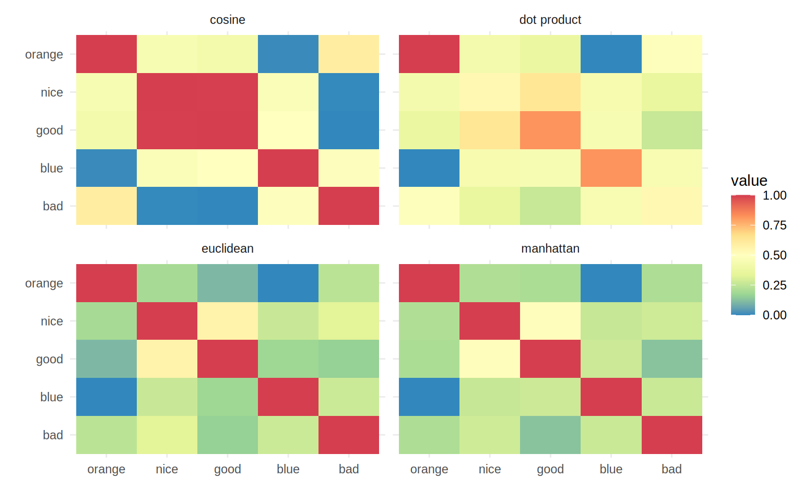

<!DOCTYPE html>
<html xmlns="http://www.w3.org/1999/xhtml" lang="en" xml:lang="en"><head>

<meta charset="utf-8">
<meta name="generator" content="quarto-1.7.31">

<meta name="viewport" content="width=device-width, initial-scale=1.0, user-scalable=yes">


<title>Embedding-based agent-systems – Generative AI</title>
<style>
code{white-space: pre-wrap;}
span.smallcaps{font-variant: small-caps;}
div.columns{display: flex; gap: min(4vw, 1.5em);}
div.column{flex: auto; overflow-x: auto;}
div.hanging-indent{margin-left: 1.5em; text-indent: -1.5em;}
ul.task-list{list-style: none;}
ul.task-list li input[type="checkbox"] {
  width: 0.8em;
  margin: 0 0.8em 0.2em -1em; /* quarto-specific, see https://github.com/quarto-dev/quarto-cli/issues/4556 */ 
  vertical-align: middle;
}
/* CSS for syntax highlighting */
html { -webkit-text-size-adjust: 100%; }
pre > code.sourceCode { white-space: pre; position: relative; }
pre > code.sourceCode > span { display: inline-block; line-height: 1.25; }
pre > code.sourceCode > span:empty { height: 1.2em; }
.sourceCode { overflow: visible; }
code.sourceCode > span { color: inherit; text-decoration: inherit; }
div.sourceCode { margin: 1em 0; }
pre.sourceCode { margin: 0; }
@media screen {
div.sourceCode { overflow: auto; }
}
@media print {
pre > code.sourceCode { white-space: pre-wrap; }
pre > code.sourceCode > span { text-indent: -5em; padding-left: 5em; }
}
pre.numberSource code
  { counter-reset: source-line 0; }
pre.numberSource code > span
  { position: relative; left: -4em; counter-increment: source-line; }
pre.numberSource code > span > a:first-child::before
  { content: counter(source-line);
    position: relative; left: -1em; text-align: right; vertical-align: baseline;
    border: none; display: inline-block;
    -webkit-touch-callout: none; -webkit-user-select: none;
    -khtml-user-select: none; -moz-user-select: none;
    -ms-user-select: none; user-select: none;
    padding: 0 4px; width: 4em;
  }
pre.numberSource { margin-left: 3em;  padding-left: 4px; }
div.sourceCode
  {   }
@media screen {
pre > code.sourceCode > span > a:first-child::before { text-decoration: underline; }
}
/* CSS for citations */
div.csl-bib-body { }
div.csl-entry {
  clear: both;
  margin-bottom: 0em;
}
.hanging-indent div.csl-entry {
  margin-left:2em;
  text-indent:-2em;
}
div.csl-left-margin {
  min-width:2em;
  float:left;
}
div.csl-right-inline {
  margin-left:2em;
  padding-left:1em;
}
div.csl-indent {
  margin-left: 2em;
}</style>


<script src="../site_libs/quarto-nav/quarto-nav.js"></script>
<script src="../site_libs/quarto-nav/headroom.min.js"></script>
<script src="../site_libs/clipboard/clipboard.min.js"></script>
<script src="../site_libs/quarto-search/autocomplete.umd.js"></script>
<script src="../site_libs/quarto-search/fuse.min.js"></script>
<script src="../site_libs/quarto-search/quarto-search.js"></script>
<meta name="quarto:offset" content="../">
<link href="../content/function_calling.html" rel="next">
<link href="../content/agent_basics.html" rel="prev">
<link href="../cover.jpg" rel="icon" type="image/jpeg">
<script src="../site_libs/quarto-html/quarto.js" type="module"></script>
<script src="../site_libs/quarto-html/tabsets/tabsets.js" type="module"></script>
<script src="../site_libs/quarto-html/popper.min.js"></script>
<script src="../site_libs/quarto-html/tippy.umd.min.js"></script>
<script src="../site_libs/quarto-html/anchor.min.js"></script>
<link href="../site_libs/quarto-html/tippy.css" rel="stylesheet">
<link href="../site_libs/quarto-html/quarto-syntax-highlighting-e1a5c8363afafaef2c763b6775fbf3ca.css" rel="stylesheet" id="quarto-text-highlighting-styles">
<script src="../site_libs/bootstrap/bootstrap.min.js"></script>
<link href="../site_libs/bootstrap/bootstrap-icons.css" rel="stylesheet">
<link href="../site_libs/bootstrap/bootstrap-4464f1163110d1f8de9b16317157bd84.min.css" rel="stylesheet" append-hash="true" id="quarto-bootstrap" data-mode="light">
<script id="quarto-search-options" type="application/json">{
  "location": "sidebar",
  "copy-button": false,
  "collapse-after": 3,
  "panel-placement": "start",
  "type": "textbox",
  "limit": 50,
  "keyboard-shortcut": [
    "f",
    "/",
    "s"
  ],
  "show-item-context": false,
  "language": {
    "search-no-results-text": "No results",
    "search-matching-documents-text": "matching documents",
    "search-copy-link-title": "Copy link to search",
    "search-hide-matches-text": "Hide additional matches",
    "search-more-match-text": "more match in this document",
    "search-more-matches-text": "more matches in this document",
    "search-clear-button-title": "Clear",
    "search-text-placeholder": "",
    "search-detached-cancel-button-title": "Cancel",
    "search-submit-button-title": "Submit",
    "search-label": "Search"
  }
}</script>

  <script src="https://cdnjs.cloudflare.com/polyfill/v3/polyfill.min.js?features=es6"></script>
  <script src="https://cdn.jsdelivr.net/npm/mathjax@3/es5/tex-chtml-full.js" type="text/javascript"></script>

<script type="text/javascript">
const typesetMath = (el) => {
  if (window.MathJax) {
    // MathJax Typeset
    window.MathJax.typeset([el]);
  } else if (window.katex) {
    // KaTeX Render
    var mathElements = el.getElementsByClassName("math");
    var macros = [];
    for (var i = 0; i < mathElements.length; i++) {
      var texText = mathElements[i].firstChild;
      if (mathElements[i].tagName == "SPAN") {
        window.katex.render(texText.data, mathElements[i], {
          displayMode: mathElements[i].classList.contains('display'),
          throwOnError: false,
          macros: macros,
          fleqn: false
        });
      }
    }
  }
}
window.Quarto = {
  typesetMath
};
</script>

<link rel="stylesheet" href="../styles.css">
</head>

<body class="nav-sidebar docked slimcontent quarto-light">

<div id="quarto-search-results"></div>
  <header id="quarto-header" class="headroom fixed-top">
  <nav class="quarto-secondary-nav">
    <div class="container-fluid d-flex">
      <button type="button" class="quarto-btn-toggle btn" data-bs-toggle="collapse" role="button" data-bs-target=".quarto-sidebar-collapse-item" aria-controls="quarto-sidebar" aria-expanded="false" aria-label="Toggle sidebar navigation" onclick="if (window.quartoToggleHeadroom) { window.quartoToggleHeadroom(); }">
        <i class="bi bi-layout-text-sidebar-reverse"></i>
      </button>
        <nav class="quarto-page-breadcrumbs" aria-label="breadcrumb"><ol class="breadcrumb"><li class="breadcrumb-item"><a href="../content/getting_started_with_llms.html">Language Models</a></li><li class="breadcrumb-item"><a href="../content/embeddings.html"><span class="chapter-title">Embedding-based agent-systems</span></a></li></ol></nav>
        <a class="flex-grow-1" role="navigation" data-bs-toggle="collapse" data-bs-target=".quarto-sidebar-collapse-item" aria-controls="quarto-sidebar" aria-expanded="false" aria-label="Toggle sidebar navigation" onclick="if (window.quartoToggleHeadroom) { window.quartoToggleHeadroom(); }">      
        </a>
      <button type="button" class="btn quarto-search-button" aria-label="Search" onclick="window.quartoOpenSearch();">
        <i class="bi bi-search"></i>
      </button>
    </div>
  </nav>
</header>
<!-- content -->
<div id="quarto-content" class="quarto-container page-columns page-rows-contents page-layout-article">
<!-- sidebar -->
  <nav id="quarto-sidebar" class="sidebar collapse collapse-horizontal quarto-sidebar-collapse-item sidebar-navigation docked overflow-auto">
    <div class="pt-lg-2 mt-2 text-left sidebar-header sidebar-header-stacked">
      <a href="../index.html" class="sidebar-logo-link">
      
      </a>
    <div class="sidebar-title mb-0 py-0">
      <a href="../">Generative AI</a> 
        <div class="sidebar-tools-main">
    <a href="https://github.com/MBrede/generative_ai" title="Source Code" class="quarto-navigation-tool px-1" aria-label="Source Code"><i class="bi bi-github"></i></a>
    <a href="../Generative-AI.pdf" title="Download PDF" class="quarto-navigation-tool px-1" aria-label="Download PDF"><i class="bi bi-file-pdf"></i></a>
</div>
    </div>
      </div>
        <div class="mt-2 flex-shrink-0 align-items-center">
        <div class="sidebar-search">
        <div id="quarto-search" class="" title="Search"></div>
        </div>
        </div>
    <div class="sidebar-menu-container"> 
    <ul class="list-unstyled mt-1">
        <li class="sidebar-item sidebar-item-section">
      <div class="sidebar-item-container"> 
            <a href="../index.html" class="sidebar-item-text sidebar-link">
 <span class="menu-text">Introduction</span></a>
          <a class="sidebar-item-toggle text-start" data-bs-toggle="collapse" data-bs-target="#quarto-sidebar-section-1" role="navigation" aria-expanded="true" aria-label="Toggle section">
            <i class="bi bi-chevron-right ms-2"></i>
          </a> 
      </div>
      <ul id="quarto-sidebar-section-1" class="collapse list-unstyled sidebar-section depth1 show">  
          <li class="sidebar-item">
  <div class="sidebar-item-container"> 
  <a href="../content/orga.html" class="sidebar-item-text sidebar-link"><span class="chapter-title">Organizational Details</span></a>
  </div>
</li>
          <li class="sidebar-item">
  <div class="sidebar-item-container"> 
  <a href="../content/project_details.html" class="sidebar-item-text sidebar-link"><span class="chapter-title">Project Details</span></a>
  </div>
</li>
      </ul>
  </li>
        <li class="sidebar-item sidebar-item-section">
      <div class="sidebar-item-container"> 
            <a class="sidebar-item-text sidebar-link text-start" data-bs-toggle="collapse" data-bs-target="#quarto-sidebar-section-2" role="navigation" aria-expanded="true">
 <span class="menu-text">Language Models</span></a>
          <a class="sidebar-item-toggle text-start" data-bs-toggle="collapse" data-bs-target="#quarto-sidebar-section-2" role="navigation" aria-expanded="true" aria-label="Toggle section">
            <i class="bi bi-chevron-right ms-2"></i>
          </a> 
      </div>
      <ul id="quarto-sidebar-section-2" class="collapse list-unstyled sidebar-section depth1 show">  
          <li class="sidebar-item">
  <div class="sidebar-item-container"> 
  <a href="../content/getting_started_with_llms.html" class="sidebar-item-text sidebar-link"><span class="chapter-title">Getting started with (L)LMs</span></a>
  </div>
</li>
          <li class="sidebar-item">
  <div class="sidebar-item-container"> 
  <a href="../content/prompting.html" class="sidebar-item-text sidebar-link"><span class="chapter-title">Prompting</span></a>
  </div>
</li>
          <li class="sidebar-item">
  <div class="sidebar-item-container"> 
  <a href="../content/agent_basics.html" class="sidebar-item-text sidebar-link"><span class="chapter-title">Agent basics</span></a>
  </div>
</li>
          <li class="sidebar-item">
  <div class="sidebar-item-container"> 
  <a href="../content/embeddings.html" class="sidebar-item-text sidebar-link active"><span class="chapter-title">Embedding-based agent-systems</span></a>
  </div>
</li>
          <li class="sidebar-item">
  <div class="sidebar-item-container"> 
  <a href="../content/function_calling.html" class="sidebar-item-text sidebar-link"><span class="chapter-title">Function Calling</span></a>
  </div>
</li>
          <li class="sidebar-item">
  <div class="sidebar-item-container"> 
  <a href="../content/agent_interaction.html" class="sidebar-item-text sidebar-link"><span class="chapter-title">Agent interactions</span></a>
  </div>
</li>
      </ul>
  </li>
        <li class="sidebar-item sidebar-item-section">
      <div class="sidebar-item-container"> 
            <a class="sidebar-item-text sidebar-link text-start" data-bs-toggle="collapse" data-bs-target="#quarto-sidebar-section-3" role="navigation" aria-expanded="true">
 <span class="menu-text">Image Generation</span></a>
          <a class="sidebar-item-toggle text-start" data-bs-toggle="collapse" data-bs-target="#quarto-sidebar-section-3" role="navigation" aria-expanded="true" aria-label="Toggle section">
            <i class="bi bi-chevron-right ms-2"></i>
          </a> 
      </div>
      <ul id="quarto-sidebar-section-3" class="collapse list-unstyled sidebar-section depth1 show">  
          <li class="sidebar-item">
  <div class="sidebar-item-container"> 
  <a href="../content/diff_models.html" class="sidebar-item-text sidebar-link"><span class="chapter-title">AI image generation</span></a>
  </div>
</li>
          <li class="sidebar-item">
  <div class="sidebar-item-container"> 
  <a href="../content/gans_and_augmentation.html" class="sidebar-item-text sidebar-link"><span class="chapter-title">AI image generation II</span></a>
  </div>
</li>
          <li class="sidebar-item">
  <div class="sidebar-item-container"> 
  <a href="../content/generation_in_agent_pipelines.html" class="sidebar-item-text sidebar-link"><span class="chapter-title">AI image generation III</span></a>
  </div>
</li>
      </ul>
  </li>
        <li class="sidebar-item sidebar-item-section">
      <div class="sidebar-item-container"> 
            <a class="sidebar-item-text sidebar-link text-start" data-bs-toggle="collapse" data-bs-target="#quarto-sidebar-section-4" role="navigation" aria-expanded="true">
 <span class="menu-text">Finetuning</span></a>
          <a class="sidebar-item-toggle text-start" data-bs-toggle="collapse" data-bs-target="#quarto-sidebar-section-4" role="navigation" aria-expanded="true" aria-label="Toggle section">
            <i class="bi bi-chevron-right ms-2"></i>
          </a> 
      </div>
      <ul id="quarto-sidebar-section-4" class="collapse list-unstyled sidebar-section depth1 show">  
          <li class="sidebar-item">
  <div class="sidebar-item-container"> 
  <a href="../content/finetuning_approaches.html" class="sidebar-item-text sidebar-link"><span class="chapter-title">Finetuning Approaches</span></a>
  </div>
</li>
          <li class="sidebar-item">
  <div class="sidebar-item-container"> 
  <a href="../content/alignment.html" class="sidebar-item-text sidebar-link"><span class="chapter-title">Alignment</span></a>
  </div>
</li>
      </ul>
  </li>
    </ul>
    </div>
</nav>
<div id="quarto-sidebar-glass" class="quarto-sidebar-collapse-item" data-bs-toggle="collapse" data-bs-target=".quarto-sidebar-collapse-item"></div>
<!-- margin-sidebar -->
    <div id="quarto-margin-sidebar" class="sidebar margin-sidebar">
        <nav id="TOC" role="doc-toc" class="toc-active" data-toc-expanded="2">
    <h2 id="toc-title"><br><br>
</h2><h3 class="anchored"><br>
Embedding-based agent-systems<br>
</h3>
   
  <ul>
  <li><a href="#semantic-embeddings-and-vector-stores" id="toc-semantic-embeddings-and-vector-stores" class="nav-link active" data-scroll-target="#semantic-embeddings-and-vector-stores">Semantic embeddings and vector stores</a></li>
  <li><a href="#retrieval-augmented-generation" id="toc-retrieval-augmented-generation" class="nav-link" data-scroll-target="#retrieval-augmented-generation">Retrieval augmented generation</a>
  <ul class="collapse">
  <li><a href="#vector-databases" id="toc-vector-databases" class="nav-link" data-scroll-target="#vector-databases">Vector databases</a></li>
  <li><a href="#rag" id="toc-rag" class="nav-link" data-scroll-target="#rag">RAG</a></li>
  <li><a href="#document-chunking" id="toc-document-chunking" class="nav-link" data-scroll-target="#document-chunking">Document chunking</a></li>
  <li><a href="#query-expansiontransformation" id="toc-query-expansiontransformation" class="nav-link" data-scroll-target="#query-expansiontransformation">Query Expansion/Transformation</a></li>
  </ul></li>
  <li><a href="#further-readings" id="toc-further-readings" class="nav-link" data-scroll-target="#further-readings">Further Readings</a></li>
  <li><a href="#references" id="toc-references" class="nav-link" data-scroll-target="#references">References</a></li>
  </ul>
<div class="toc-actions"><ul><li><a href="https://github.com/MBrede/generative_ai/issues/new" class="toc-action"><i class="bi bi-github"></i>Report an issue</a></li></ul></div></nav>
    </div>
<!-- main -->
<main class="content page-columns page-full" id="quarto-document-content">

<header id="title-block-header" class="quarto-title-block default"><nav class="quarto-page-breadcrumbs quarto-title-breadcrumbs d-none d-lg-block" aria-label="breadcrumb"><ol class="breadcrumb"><li class="breadcrumb-item"><a href="../content/getting_started_with_llms.html">Language Models</a></li><li class="breadcrumb-item"><a href="../content/embeddings.html"><span class="chapter-title">Embedding-based agent-systems</span></a></li></ol></nav>
<div class="quarto-title">
<h1 class="title"><span class="chapter-title">Embedding-based agent-systems</span></h1>
</div>


<div class="quarto-title-meta">

    
  
    
  </div>
  


</header>


<p>All agents we discussed until here are using tools that allow them to use their generated inputs in some way. In most of the task we want to utilize agents, we do not only want to generate text but to also inform the generation based on some kind of existing knowledge base. Examples for these kinds of usecases include:</p>
<ul>
<li>Answering questions about a specific topic (e.g., a company or product)</li>
<li>Summarizing a document</li>
<li>Generating a report based on data</li>
</ul>
<p>Though most modern LLMs are increasingly capable in answering basic knowledge-questions, the more comples a topic or the more relevant the factual basis of an answer is, the more it is important to base generated answers on actual data.</p>
<section id="semantic-embeddings-and-vector-stores" class="level2 page-columns page-full">
<h2 class="anchored" data-anchor-id="semantic-embeddings-and-vector-stores">Semantic embeddings and vector stores</h2>
<p>To empower an agent too look up information during its thought-process, one has to build a tool that allows an agent to use natural language to retrieve information necessary for a task. The fundamental principle to do this are so-called <em>semantic embeddings</em>. These are pretty close to the concept we introduced when talking about the foundations of LLMs (see <a href="getting_started_with_llms">here</a>) and can be understood as a way to map textual data into a vector space. The main idea is that semantically similar texts should have similar embeddings, i.e., they are close in the vector space. Close in this context is meant as having a reasonibly small distance between them. The go-to standard to measure this distance is the <strong>cosine similarity</strong>, which has proven usefull enough to be the standard for a range of semantic retrieval implementations (i.e., they are used in <a href="https://cookbook.openai.com/examples/recommendation_using_embeddings">OpenAI tutorials</a> and in <a href="https://learn.microsoft.com/en-us/azure/ai-services/openai/concepts/understand-embeddings">Azure embedding-applications</a>). The cosine similarity is defined as:</p>
<p><span class="math display">\[
\text{cosine\_similarity}(u, v) = \frac{u \cdot v}{\|u\| \|v\|} = \frac{\sum_{i=1}^{n} u_i v_i}{\sqrt{\sum_{i=1}^{n} u_i^2} \sqrt{\sum_{i=1}^{n} v_i^2}}
\]</span> The rationale here is that sequences with semantically similar contents should point to similar directions in the high dimensional vector space. See <a href="#fig-cosineSimilarity" class="quarto-xref">Figure&nbsp;<span>6.1</span></a> for an illustration of this and other common similarity concepts seen in semantic retrieval.</p>
<div class="cell enlarge-onhover" data-layout-align="center">
<div id="fig-cosineSimilarity" class="cell enlarge-onhover quarto-float quarto-figure quarto-figure-center anchored" data-layout-align="center">
<figure class="quarto-float quarto-float-fig figure">
<div aria-describedby="fig-cosineSimilarity-caption-0ceaefa1-69ba-4598-a22c-09a6ac19f8ca">
<div class="cell-output-display">
<div id="fig-cosineSimilarity-1" class="quarto-float quarto-figure quarto-figure-center anchored" data-fig-align="center" alt="Illustration of &quot;semantic embeddings&quot; of different word. The words &quot;good&quot;, &quot;nice&quot; and &quot;orange&quot; are all mapped to a vector space.">
<figure class="quarto-float quarto-subfloat-fig figure">
<div aria-describedby="fig-cosineSimilarity-1-caption-0ceaefa1-69ba-4598-a22c-09a6ac19f8ca">

</div>
<figcaption class="quarto-float-caption-bottom quarto-subfloat-caption quarto-subfloat-fig" id="fig-cosineSimilarity-1-caption-0ceaefa1-69ba-4598-a22c-09a6ac19f8ca">
(a) Illustration of “semantic embeddings” of different word.
</figcaption>
</figure>
</div>
</div>
<div class="cell-output-display">
<div id="fig-cosineSimilarity-2" class="quarto-float quarto-figure quarto-figure-center anchored" data-fig-align="center" alt="Illustration of similarities between these words. 4 common similarity concepts seen in semantic retrieval: cosine, euclidean, dot product and manhattan.">
<figure class="quarto-float quarto-subfloat-fig figure">
<div aria-describedby="fig-cosineSimilarity-2-caption-0ceaefa1-69ba-4598-a22c-09a6ac19f8ca">

</div>
<figcaption class="quarto-float-caption-bottom quarto-subfloat-caption quarto-subfloat-fig" id="fig-cosineSimilarity-2-caption-0ceaefa1-69ba-4598-a22c-09a6ac19f8ca">
(b) Illustration of 4 common similarity concepts seen in semantic retrieval: cosine, euclidean, dot product and manhattan. dot product and cosine are taking the direction of the vector into account, while the cosine ignores the length of the vectors and the dot product does not. Manhattan and euclidean are both measuring the distance between two points in a vector space, but they do it differently. Euclidean is the straight line between two points, while manhattan is the sum of the absolute differences between the coordinates of the two points.
</figcaption>
</figure>
</div>
</div>
</div>
<figcaption class="quarto-float-caption-bottom quarto-float-caption quarto-float-fig" id="fig-cosineSimilarity-caption-0ceaefa1-69ba-4598-a22c-09a6ac19f8ca">
Fig&nbsp;6.1: Illustration of common similarity metrics in semantic search.
</figcaption>
</figure>
</div>
</div>
<p>As always, there is not the one solution to all problems though and the applicability of cosine similarity might not be optimal for your usecase <span class="citation" data-cites="steckCosineSimilarityEmbeddingsReally2024 goyalComparativeAnalysisDifferent2022">(<a href="#ref-goyalComparativeAnalysisDifferent2022" role="doc-biblioref">Goyal &amp; Sharma, 2022</a>; <a href="#ref-steckCosineSimilarityEmbeddingsReally2024" role="doc-biblioref">Steck et al., 2024</a>)</span>.</p>
<p>Though one could use any kind of (L)LM to calculate embeddings for this case<a href="#fn1" class="footnote-ref" id="fnref1" role="doc-noteref"><sup>1</sup></a>, it is advisable to use models specifically trained for this purpose. <span class="citation" data-cites="reimersSentenceBERTSentenceEmbeddings2019a">Reimers &amp; Gurevych (<a href="#ref-reimersSentenceBERTSentenceEmbeddings2019a" role="doc-biblioref">2019</a>)</span> proposed <em>Sentence-BERT</em> which is a simple but effective approach to calculate semantic embeddings. SBERT and similar approaches are based on a (L)LM that was trained to predict missing words as we discussed before, resulting in a general representation of natural language. In the case of the original paper, they used (among others) the BERT model <span class="citation" data-cites="devlinBERTPretrainingDeep2019a">Devlin et al. (<a href="#ref-devlinBERTPretrainingDeep2019a" role="doc-biblioref">2019</a>)</span> mentioned before.</p>
<div class="no-row-height column-margin column-container"><div id="fn1"><p><sup>1</sup>&nbsp;And there are approaches to use LLMs to solve this taks i.e., <span class="citation" data-cites="jiangScalingSentenceEmbeddings2023a">Jiang et al. (<a href="#ref-jiangScalingSentenceEmbeddings2023a" role="doc-biblioref">2023</a>)</span></p></div><div id="fn2"><p><sup>2</sup>&nbsp;The original BERT-paper did this by adding a pooling layer before the task-header that extracted and weighed the context-dependend embedding of the first token. The SBERT paper tried different pooling-strategies and used a mean over each embedding dimension of the sequence.</p></div></div><p>The authors then use this to embed a pair of sentences into one embedding-vector each<a href="#fn2" class="footnote-ref" id="fnref2" role="doc-noteref"><sup>2</sup></a>, for which some measure of semantic similarity is known. An example for a dataset containing such sentences is the <a href="https://aclanthology.org/D15-1075/">Stanford Natural Language Inferenc(SNLI) corpus <span class="citation" data-cites="bowmanLargeAnnotatedCorpus2015">Bowman et al. (<span>2015</span>)</span></a> which labels 550k pairs of sentences as either <em>entailment</em>, <em>contradiction</em> or <em>neutral</em>. <span class="citation" data-cites="reimersSentenceBERTSentenceEmbeddings2019a">Reimers &amp; Gurevych (<a href="#ref-reimersSentenceBERTSentenceEmbeddings2019a" role="doc-biblioref">2019</a>)</span> then concated the both senteces embeddings and their element-wise difference into a single vector which is fed to a multiclass classifier, indicating in which category the sentences relationship falls. At inference, this classification head was removed and replaced as the cosine similarity as discussed above. The resulting network is highly effective in calculating semantic similarities between sentences.</p>
<p>A look at the <a href="https://www.sbert.net/docs/sentence_transformer/loss_overview.html">sbert-website</a> shows that the module has somewhat grown and now does supply a series of learning paradigms that can be used to efficiently tune a model for your specific usecase<a href="#fn3" class="footnote-ref" id="fnref3" role="doc-noteref"><sup>3</sup></a>. As the library has grown, so has the sheer amount of pretrained embedding-models in some way based on this architecture that are hosted on huggingface. The <a href="https://huggingface.co/spaces/mteb/leaderboard">MTEB-Leaderboard</a> is a good strat to search for a model for your application. One utilization of this model-family, which has already been implicitly used in this script, is their very efficient ability to semantically search for documents. If a model is very good at finding similar sentences, it can also be very good to find documents that are very similar to a question.</p>
<div class="no-row-height column-margin column-container"><div id="fn3"><p><sup>3</sup>&nbsp;And this does not have to be expensive. <span class="citation" data-cites="tunstallEfficientFewShotLearning2022">Tunstall et al. (<a href="#ref-tunstallEfficientFewShotLearning2022" role="doc-biblioref">2022</a>)</span> have shown a highly efficient contrastive learning paradigm that limts the amount of necessary labels for a ridiuculously small amount of labels.</p></div></div><p>Look at the example illustrated in <a href="#fig-docRetrieval" class="quarto-xref">Figure&nbsp;<span>6.2</span></a>. The question “why is the sky blue” embedded with the same model as our 5 documents stating some facts.</p>
<div id="fig-docRetrieval" class="enlarge-onhover quarto-float quarto-figure quarto-figure-center anchored">
<figure class="quarto-float quarto-float-fig figure">
<div aria-describedby="fig-docRetrieval-caption-0ceaefa1-69ba-4598-a22c-09a6ac19f8ca">

</div>
<figcaption class="quarto-float-caption-bottom quarto-float-caption quarto-float-fig" id="fig-docRetrieval-caption-0ceaefa1-69ba-4598-a22c-09a6ac19f8ca">
Fig&nbsp;6.2: Illustration of the usage of embedding-based distances in retrieval.
</figcaption>
</figure>
</div>
<p>We can then calculate the cosine-similarity between these embeddings and return the document, that has the highest similarity to our question.</p>
<div class="callout callout-style-default callout-note callout-titled">
<div class="callout-header d-flex align-content-center">
<div class="callout-icon-container">
<i class="callout-icon"></i>
</div>
<div class="callout-title-container flex-fill">
📝 Task
</div>
</div>
<div class="callout-body-container callout-body">
<p>Install the sentence-transformer package and download <a href="https://huggingface.co/datasets/tdiggelm/climate_fever">the climate_fever-dataset</a>.</p>
<p>Choose one model from the <a href="https://huggingface.co/spaces/mteb/leaderboard">MTEB-Leaderboard</a> that you deem adequatly sized and appropriate for the task</p>
<p>Test the different metrics for the first twenty claims of the dataset and a question you formulate.</p>
<p>Use the similarity-implementations from <a href="https://scikit-learn.org/dev/api/sklearn.metrics.html#module-sklearn.metrics.pairwise">sklearn.metrics.pairwise</a>.</p>
</div>
</div>
<p>This approach of using a model to embed documents and questions into a vector space is the basis for the so-called <em>Retrieval augmented generation</em>.</p>
</section>
<section id="retrieval-augmented-generation" class="level2">
<h2 class="anchored" data-anchor-id="retrieval-augmented-generation">Retrieval augmented generation</h2>
<p>Retrieval augmented generation (RAG) is a framework that does pretty much do what it says on the tin. You use a retrieval model to find documents that are similar to your question and then either return these documents our feed them into a generative model, which then generates an answer based on these documents. This process can additionally be wrapped as a tool to be used by an agent, so that your existing agent can now also use external knowledge sources to answer questions.</p>
<p>Retrieval does not have to be semantics-based in this context - all kinds of data sources and databases can be made accessible for a LLM - we will focus on a purely embbedding based approach here though.</p>
<p>Although the small example in the last task was working, it is not really scalable. It was fine for a limited set of examples, if you want to realistically make a whole knowledge base searchable, you need to use an appropriate database system.</p>
<section id="vector-databases" class="level3">
<h3 class="anchored" data-anchor-id="vector-databases">Vector databases</h3>
<p>A vector database is a database that stores vectors and allows for efficient similarity searches. As can be seen in the <a href="https://db-engines.com/en/ranking">db-engines ranking</a> there has been a surge of interest in this area recently, with many new players entering the market. From the plethora of vector databases, these three are examples that virtue a honorary mention:</p>
<ol type="1">
<li><p><a href="https://www.trychroma.com/">Chroma</a> - a in-memory database for small applications that is especially easy to get to run.</p></li>
<li><p><a href="https://www.elastic.co/guide/en/elasticsearch/reference/current/bring-your-own-vectors.html">Elasticsearch</a> - a well established database that is the go to system for open source search engines and has recently (and kind of naturally) also branched out into vector databases.</p></li>
<li><p><a href="https://qdrant.tech/">Qdrant</a> - the product of a Berlin-based startup that focusses on stability and scalability. It can also run in memory, but does natively support hard drive storage.</p></li>
</ol>
<p>The best way to use qdrant is to use <a href="https://qdrant.tech/documentation/quickstart/">docker</a> to run it and the python sdk to interact with it. Since version 1.1.1, the sdk also allows to just run the client in memory.</p>
<div class="callout callout-style-default callout-note callout-titled">
<div class="callout-header d-flex align-content-center">
<div class="callout-icon-container">
<i class="callout-icon"></i>
</div>
<div class="callout-title-container flex-fill">
📝 Task
</div>
</div>
<div class="callout-body-container callout-body">
<p>Install the qdrant-client python-sdk and fastembed.</p>
<p>Create a collection for the claims and one for the evidence in <a href="https://huggingface.co/datasets/tdiggelm/climate_fever">the climate_fever-dataset</a>. Add the first 200 entries to each of these collections. Use qdrants <a href="https://qdrant.tech/articles/fastembed/">fastembemd</a>-integration to do this.</p>
<p>Test the similarity search on a question you formulate.</p>
</div>
</div>
</section>
<section id="rag" class="level3">
<h3 class="anchored" data-anchor-id="rag">RAG</h3>
<p>The last step to make this into a RAG pipeline is to use a generative model to answer the question based on the retrieved documents.</p>
<p>This means, that we do collect the relevant documents like we did before, still based on a natural language question, but instead of returning the hits we got from the index, we feed them into a LLM and ask it to generate an answer based on these documents. This is where the name retrieval augmented generation comes from - we use the retrieval step to augment the generative model with additional information. The diagram in <a href="#fig-rag" class="quarto-xref">Figure&nbsp;<span>6.3</span></a> illustrates this process.</p>
<div id="fig-rag" class="enlarge-onhover quarto-float quarto-figure quarto-figure-center anchored">
<figure class="quarto-float quarto-float-fig figure">
<div aria-describedby="fig-rag-caption-0ceaefa1-69ba-4598-a22c-09a6ac19f8ca">

</div>
<figcaption class="quarto-float-caption-bottom quarto-float-caption quarto-float-fig" id="fig-rag-caption-0ceaefa1-69ba-4598-a22c-09a6ac19f8ca">
Fig&nbsp;6.3: Illustration of a RAG-system.
</figcaption>
</figure>
</div>
<div class="callout callout-style-default callout-note callout-titled">
<div class="callout-header d-flex align-content-center">
<div class="callout-icon-container">
<i class="callout-icon"></i>
</div>
<div class="callout-title-container flex-fill">
📝 Task
</div>
</div>
<div class="callout-body-container callout-body">
<p>Implement a RAG pipeline for the climate_fever dataset using qdrant as vector database and a LLM of your choice for the summarization.</p>
<p>Try to find a prompt that results in the LLM</p>
<ol type="a">
<li>using the information given</li>
<li>not inventing new information</li>
<li>referencing the source of the information it uses</li>
</ol>
<p>Upload your results until here (embedder, database and summarization) to moodle.</p>
</div>
</div>
<p>Most agent frameworks provide integrations for a variety of vector databases.</p>
<p>In terms of llamaindex, there are not just one but two tutorials on how to get qdrant to integrate into your agent, one from <a href="https://qdrant.tech/documentation/frameworks/llama-index/">qdrant</a> for general integration and one from <a href="https://docs.llamaindex.ai/en/stable/examples/vector_stores/QdrantIndexDemo/">llamaindex</a>.</p>
<p>The pipeline is pretty close to what we discussed until here, it just uses the llamaindex-typical wrapper classes. See <a href="#tip-llamaindexRag" class="quarto-xref">Tip&nbsp;<span>6.1</span></a> for an example RAG-system implemented in Llamaindex.</p>
<div id="tip-llamaindexRag" class="callout callout-style-simple callout-tip no-icon callout-titled">
<div class="callout-header d-flex align-content-center" data-bs-toggle="collapse" data-bs-target=".callout-5-contents" aria-controls="callout-5" aria-expanded="false" aria-label="Toggle callout">
<div class="callout-icon-container">
<i class="callout-icon no-icon"></i>
</div>
<div class="callout-title-container flex-fill">
Tip&nbsp;6.1: Llamaindex Rag
</div>
<div class="callout-btn-toggle d-inline-block border-0 py-1 ps-1 pe-0 float-end"><i class="callout-toggle"></i></div>
</div>
<div id="callout-5" class="callout-5-contents callout-collapse collapse">
<div class="callout-body-container callout-body">
<p>The first thing in both the Llamaindex and the manual way of creating a retrieval pipeline is the setup of a vector database:</p>
<div class="sourceCode" id="cb1"><pre class="sourceCode python code-with-copy"><code class="sourceCode python"><span id="cb1-1"><a href="#cb1-1" aria-hidden="true" tabindex="-1"></a><span class="im">from</span> qdrant_client <span class="im">import</span> QdrantClient</span>
<span id="cb1-2"><a href="#cb1-2" aria-hidden="true" tabindex="-1"></a><span class="im">from</span> qdrant_client.models <span class="im">import</span> Distance, VectorParams, Batch</span>
<span id="cb1-3"><a href="#cb1-3" aria-hidden="true" tabindex="-1"></a>DIMENSIONS <span class="op">=</span> <span class="dv">384</span></span>
<span id="cb1-4"><a href="#cb1-4" aria-hidden="true" tabindex="-1"></a>client <span class="op">=</span> QdrantClient(location<span class="op">=</span><span class="st">":memory:"</span>)</span></code><button title="Copy to Clipboard" class="code-copy-button"><i class="bi"></i></button></pre></div>
<p>To store data and query the database, we have to load a embedding-model. As in the manual way of creating a retrieval pipeline discussed before, we can use a huggingface-SentenceTranformer model. But instead of using the SentenceTransformer class from the sentence_transformers library, we have to use the HuggingFaceEmbedding class from Llamaindex. This model is entered into the Llamaindex-Settings.</p>
<div class="sourceCode" id="cb2"><pre class="sourceCode python code-with-copy"><code class="sourceCode python"><span id="cb2-1"><a href="#cb2-1" aria-hidden="true" tabindex="-1"></a><span class="im">from</span> llama_index.core <span class="im">import</span> Settings</span>
<span id="cb2-2"><a href="#cb2-2" aria-hidden="true" tabindex="-1"></a><span class="im">from</span> llama_index.embeddings.huggingface <span class="im">import</span> HuggingFaceEmbedding</span>
<span id="cb2-3"><a href="#cb2-3" aria-hidden="true" tabindex="-1"></a>embed_model <span class="op">=</span> HuggingFaceEmbedding(model_name<span class="op">=</span><span class="st">"sentence-transformers/all-MiniLM-L12-v2"</span>)</span>
<span id="cb2-4"><a href="#cb2-4" aria-hidden="true" tabindex="-1"></a>Settings.embed_model <span class="op">=</span> embed_model</span></code><button title="Copy to Clipboard" class="code-copy-button"><i class="bi"></i></button></pre></div>
<p>The next step is to wrap the vector-store into a Llamaindex-VectorStoreIndex. This index can be used to add our documents to the database.</p>
<div class="sourceCode" id="cb3"><pre class="sourceCode python code-with-copy"><code class="sourceCode python"><span id="cb3-1"><a href="#cb3-1" aria-hidden="true" tabindex="-1"></a><span class="im">from</span> llama_index.vector_stores.qdrant <span class="im">import</span> QdrantVectorStore</span>
<span id="cb3-2"><a href="#cb3-2" aria-hidden="true" tabindex="-1"></a></span>
<span id="cb3-3"><a href="#cb3-3" aria-hidden="true" tabindex="-1"></a>vector_store <span class="op">=</span> QdrantVectorStore(client<span class="op">=</span>client, collection_name<span class="op">=</span><span class="st">"paper"</span>)</span></code><button title="Copy to Clipboard" class="code-copy-button"><i class="bi"></i></button></pre></div>
<p>As an example, we will add the “Attention is all you need” paper. This is how the head of our txt-file looks like:</p>
<pre><code>         Attention Is All You Need
arXiv:1706.03762v7 [cs.CL] 2 Aug 2023


                                             Ashish Vaswani∗                Noam Shazeer∗               Niki Parmar∗             Jakob Uszkoreit∗
                                              Google Brain                   Google Brain             Google Research            Google Research
                                          avaswani@google.com             noam@google.com            nikip@google.com            usz@google.com</code></pre>
<p>Since we can not just dump the document at once, we will chunk it in sentences (more about that later). This can be done like this (ignore the parameters by now, we will look at them later):</p>
<div class="sourceCode" id="cb5"><pre class="sourceCode python code-with-copy"><code class="sourceCode python"><span id="cb5-1"><a href="#cb5-1" aria-hidden="true" tabindex="-1"></a><span class="im">from</span> llama_index.core.node_parser <span class="im">import</span> SentenceSplitter</span>
<span id="cb5-2"><a href="#cb5-2" aria-hidden="true" tabindex="-1"></a><span class="im">from</span> llama_index.core <span class="im">import</span> Document</span>
<span id="cb5-3"><a href="#cb5-3" aria-hidden="true" tabindex="-1"></a></span>
<span id="cb5-4"><a href="#cb5-4" aria-hidden="true" tabindex="-1"></a>node_parser <span class="op">=</span> SentenceSplitter(chunk_size<span class="op">=</span><span class="dv">100</span>, chunk_overlap<span class="op">=</span><span class="dv">20</span>)</span>
<span id="cb5-5"><a href="#cb5-5" aria-hidden="true" tabindex="-1"></a></span>
<span id="cb5-6"><a href="#cb5-6" aria-hidden="true" tabindex="-1"></a>nodes <span class="op">=</span> node_parser.get_nodes_from_documents(</span>
<span id="cb5-7"><a href="#cb5-7" aria-hidden="true" tabindex="-1"></a>    [Document(text<span class="op">=</span>text)], show_progress<span class="op">=</span><span class="va">False</span></span>
<span id="cb5-8"><a href="#cb5-8" aria-hidden="true" tabindex="-1"></a>)</span></code><button title="Copy to Clipboard" class="code-copy-button"><i class="bi"></i></button></pre></div>
<p>These documents are then added to our database and transformed in an <em>index</em> llamaindex can use:</p>
<div class="sourceCode" id="cb6"><pre class="sourceCode python code-with-copy"><code class="sourceCode python"><span id="cb6-1"><a href="#cb6-1" aria-hidden="true" tabindex="-1"></a><span class="im">from</span> llama_index.core <span class="im">import</span> VectorStoreIndex</span>
<span id="cb6-2"><a href="#cb6-2" aria-hidden="true" tabindex="-1"></a></span>
<span id="cb6-3"><a href="#cb6-3" aria-hidden="true" tabindex="-1"></a>index <span class="op">=</span> VectorStoreIndex(</span>
<span id="cb6-4"><a href="#cb6-4" aria-hidden="true" tabindex="-1"></a>    nodes<span class="op">=</span>nodes,</span>
<span id="cb6-5"><a href="#cb6-5" aria-hidden="true" tabindex="-1"></a>    vector_store<span class="op">=</span>vector_store,</span>
<span id="cb6-6"><a href="#cb6-6" aria-hidden="true" tabindex="-1"></a>)</span></code><button title="Copy to Clipboard" class="code-copy-button"><i class="bi"></i></button></pre></div>
<p>This index can already be used to retrieve documents from the database (by converting it to a <em>retriever</em>).</p>
<div class="sourceCode" id="cb7"><pre class="sourceCode python code-with-copy"><code class="sourceCode python"><span id="cb7-1"><a href="#cb7-1" aria-hidden="true" tabindex="-1"></a>retriever <span class="op">=</span> index.as_retriever(similarity_top_k<span class="op">=</span><span class="dv">10</span>)</span>
<span id="cb7-2"><a href="#cb7-2" aria-hidden="true" tabindex="-1"></a>retriever.retrieve(<span class="st">'What do the terms Key, Value and Query stand for in self-attention?'</span>)</span></code><button title="Copy to Clipboard" class="code-copy-button"><i class="bi"></i></button></pre></div>
<pre><code>[NodeWithScore(node=TextNode(id_='04c12537-5f33-4d41-a4d4-df30d2aed6e4', embedding=None, metadata={}, excluded_embed_metadata_keys=[], excluded_llm_metadata_keys=[], relationships={&lt;NodeRelationship.SOURCE: '1'&gt;: RelatedNodeInfo(node_id='847f2be4-3799-41b5-80c0-b390298eba24', node_type=&lt;ObjectType.DOCUMENT: '4'&gt;, metadata={}, hash='74e64008cffed21d58edef5058f6cf6b3bc853bf936b83eefb70563168b73c5a'), &lt;NodeRelationship.PREVIOUS: '2'&gt;: RelatedNodeInfo(node_id='22d5c0dc-d921-4790-ac6e-4f6a6d5f336f', node_type=&lt;ObjectType.TEXT: '1'&gt;, metadata={}, hash='772c092906000e119c69ad2e5cb90148a6c8b113d54a20fb9d5984d6a9695ee8'), &lt;NodeRelationship.NEXT: '3'&gt;: RelatedNodeInfo(node_id='893d077f-a8ab-4a3f-9765-69ef72d46ec4', node_type=&lt;ObjectType.TEXT: '1'&gt;, metadata={}, hash='df269253fe4504ec666a0a40380f9399466c5bd366c7ce6c853ee45b31d4bc84')}, text='of the values, where the weight assigned to each value is computed by a compatibility function of the\nquery with the corresponding key.\n\n3.2.1   Scaled Dot-Product Attention\nWe call our particular attention "Scaled Dot-Product Attention" (Figure 2). The input consists of\nqueries and keys of dimension dk , and\n                                    √ values of dimension dv .', mimetype='text/plain', start_char_idx=11715, end_char_idx=12088, text_template='{metadata_str}\n\n{content}', metadata_template='{key}: {value}', metadata_seperator='\n'), score=0.588352239002419),
 NodeWithScore(node=TextNode(id_='c42d8e8c-24ac-447a-8058-d62d198ce9eb', embedding=None, metadata={}, excluded_embed_metadata_keys=[], excluded_llm_metadata_keys=[], relationships={&lt;NodeRelationship.SOURCE: '1'&gt;: RelatedNodeInfo(node_id='847f2be4-3799-41b5-80c0-b390298eba24', node_type=&lt;ObjectType.DOCUMENT: '4'&gt;, metadata={}, hash='74e64008cffed21d58edef5058f6cf6b3bc853bf936b83eefb70563168b73c5a'), &lt;NodeRelationship.PREVIOUS: '2'&gt;: RelatedNodeInfo(node_id='e961df5f-04be-4bf8-bba0-b30b346e6e3e', node_type=&lt;ObjectType.TEXT: '1'&gt;, metadata={}, hash='944203475caa494a68b2ca15140cea2278792db8546209bcc538388bf227b57d'), &lt;NodeRelationship.NEXT: '3'&gt;: RelatedNodeInfo(node_id='12962f1d-060f-49d3-9ff9-be2dceb23736', node_type=&lt;ObjectType.TEXT: '1'&gt;, metadata={}, hash='46773d9899458459b747af4980832a961621033663b11cb056304074633c0f14')}, text='Self-attention, sometimes called intra-attention is an attention mechanism relating different positions\nof a single sequence in order to compute a representation of the sequence. Self-attention has been\nused successfully in a variety of tasks including reading comprehension, abstractive summarization,\ntextual entailment and learning task-independent sentence representations [4, 27, 28, 22].', mimetype='text/plain', start_char_idx=8003, end_char_idx=8396, text_template='{metadata_str}\n\n{content}', metadata_template='{key}: {value}', metadata_seperator='\n'), score=0.5581949233902119),
 NodeWithScore(node=TextNode(id_='893d077f-a8ab-4a3f-9765-69ef72d46ec4', embedding=None, metadata={}, excluded_embed_metadata_keys=[], excluded_llm_metadata_keys=[], relationships={&lt;NodeRelationship.SOURCE: '1'&gt;: RelatedNodeInfo(node_id='847f2be4-3799-41b5-80c0-b390298eba24', node_type=&lt;ObjectType.DOCUMENT: '4'&gt;, metadata={}, hash='74e64008cffed21d58edef5058f6cf6b3bc853bf936b83eefb70563168b73c5a'), &lt;NodeRelationship.PREVIOUS: '2'&gt;: RelatedNodeInfo(node_id='04c12537-5f33-4d41-a4d4-df30d2aed6e4', node_type=&lt;ObjectType.TEXT: '1'&gt;, metadata={}, hash='4dc2893909c949675d444324e091b9dcae176eafe0faeb456e4f571f79863ac8'), &lt;NodeRelationship.NEXT: '3'&gt;: RelatedNodeInfo(node_id='e48f428a-1d0f-4830-8aca-82cbf4cd4b67', node_type=&lt;ObjectType.TEXT: '1'&gt;, metadata={}, hash='4a7481ff7440b3355d18a8f77fdbcf637903e138a37a44c74d4fd287baf610f2')}, text='We compute the dot products of the\nquery with all keys, divide each by dk , and apply a softmax function to obtain the weights on the\nvalues.\nIn practice, we compute the attention function on a set of queries simultaneously, packed together\ninto a matrix Q. The keys and values are also packed together into matrices K and V .', mimetype='text/plain', start_char_idx=12089, end_char_idx=12415, text_template='{metadata_str}\n\n{content}', metadata_template='{key}: {value}', metadata_seperator='\n'), score=0.5557579023667499),
 NodeWithScore(node=TextNode(id_='0146f53a-f1b1-4d80-a333-26746920ab9d', embedding=None, metadata={}, excluded_embed_metadata_keys=[], excluded_llm_metadata_keys=[], relationships={&lt;NodeRelationship.SOURCE: '1'&gt;: RelatedNodeInfo(node_id='847f2be4-3799-41b5-80c0-b390298eba24', node_type=&lt;ObjectType.DOCUMENT: '4'&gt;, metadata={}, hash='74e64008cffed21d58edef5058f6cf6b3bc853bf936b83eefb70563168b73c5a'), &lt;NodeRelationship.PREVIOUS: '2'&gt;: RelatedNodeInfo(node_id='c0f333cd-8860-48e5-b177-649855617c5a', node_type=&lt;ObjectType.TEXT: '1'&gt;, metadata={}, hash='c5cea5e4a2c19b51c1912e3fbb06fd9f445f2ab46a888146c9540685c513a907'), &lt;NodeRelationship.NEXT: '3'&gt;: RelatedNodeInfo(node_id='5d433fd9-785b-4f25-b3b0-5cd206b0ca37', node_type=&lt;ObjectType.TEXT: '1'&gt;, metadata={}, hash='e52e557964f178c114303403bfab945ce6fc6bc18fbc723bc2c110071beaf965')}, text='• The encoder contains self-attention layers. In a self-attention layer all of the keys, values\n           and queries come from the same place, in this case, the output of the previous layer in the\n           encoder. Each position in the encoder can attend to all positions in the previous layer of the\n           encoder.', mimetype='text/plain', start_char_idx=16021, end_char_idx=16345, text_template='{metadata_str}\n\n{content}', metadata_template='{key}: {value}', metadata_seperator='\n'), score=0.5531707169222685),
 NodeWithScore(node=TextNode(id_='22d5c0dc-d921-4790-ac6e-4f6a6d5f336f', embedding=None, metadata={}, excluded_embed_metadata_keys=[], excluded_llm_metadata_keys=[], relationships={&lt;NodeRelationship.SOURCE: '1'&gt;: RelatedNodeInfo(node_id='847f2be4-3799-41b5-80c0-b390298eba24', node_type=&lt;ObjectType.DOCUMENT: '4'&gt;, metadata={}, hash='74e64008cffed21d58edef5058f6cf6b3bc853bf936b83eefb70563168b73c5a'), &lt;NodeRelationship.PREVIOUS: '2'&gt;: RelatedNodeInfo(node_id='71788dae-10dc-4341-8ebd-250a8836bce5', node_type=&lt;ObjectType.TEXT: '1'&gt;, metadata={}, hash='f1c9e10879cdc5796376d70528c5ccd9d988818269ef633ea539e6d2df1922d1'), &lt;NodeRelationship.NEXT: '3'&gt;: RelatedNodeInfo(node_id='04c12537-5f33-4d41-a4d4-df30d2aed6e4', node_type=&lt;ObjectType.TEXT: '1'&gt;, metadata={}, hash='4dc2893909c949675d444324e091b9dcae176eafe0faeb456e4f571f79863ac8')}, text='3.2   Attention\n\nAn attention function can be described as mapping a query and a set of key-value pairs to an output,\nwhere the query, keys, values, and output are all vectors. The output is computed as a weighted sum\n\n\n                                                  3\n\x0c           Scaled Dot-Product Attention                                  Multi-Head Attention\n\n\n\n\nFigure 2: (left) Scaled Dot-Product Attention. (right) Multi-Head Attention consists of several\nattention layers running in parallel.', mimetype='text/plain', start_char_idx=11208, end_char_idx=11712, text_template='{metadata_str}\n\n{content}', metadata_template='{key}: {value}', metadata_seperator='\n'), score=0.5503383930857552),
 NodeWithScore(node=TextNode(id_='55481635-fcaa-4e90-9625-9b0c3bfa3109', embedding=None, metadata={}, excluded_embed_metadata_keys=[], excluded_llm_metadata_keys=[], relationships={&lt;NodeRelationship.SOURCE: '1'&gt;: RelatedNodeInfo(node_id='847f2be4-3799-41b5-80c0-b390298eba24', node_type=&lt;ObjectType.DOCUMENT: '4'&gt;, metadata={}, hash='74e64008cffed21d58edef5058f6cf6b3bc853bf936b83eefb70563168b73c5a'), &lt;NodeRelationship.PREVIOUS: '2'&gt;: RelatedNodeInfo(node_id='923d6eec-1ba9-4972-b457-47cc1cb5e5a7', node_type=&lt;ObjectType.TEXT: '1'&gt;, metadata={}, hash='534fa8133845bae34a1c58d14d5fe840710190a12c4951fa24b1acaaa4ed8e35'), &lt;NodeRelationship.NEXT: '3'&gt;: RelatedNodeInfo(node_id='ea0b511f-4179-4f64-8e5b-1cf5f6d76404', node_type=&lt;ObjectType.TEXT: '1'&gt;, metadata={}, hash='a958edeb1ca826ae9eb259fb9846f6fe7d822b9462583eea56914ae0383170e5')}, text='.                       .              .\n                                                                                                                 &lt;EOS&gt;       &lt;EOS&gt;            &lt;EOS&gt;                 &lt;EOS&gt;\n                                                                                                                  &lt;pad&gt;      &lt;pad&gt;             &lt;pad&gt;                &lt;pad&gt;\n\n\n\n\n     Full attentions for head 5. Bottom: Isolated attentions from just the word ‘its’ for attention heads 5\n     Figure 4: Two attention heads, also in layer 5 of 6, apparently involved in anaphora resolution.', mimetype='text/plain', start_char_idx=55980, end_char_idx=56574, text_template='{metadata_str}\n\n{content}', metadata_template='{key}: {value}', metadata_seperator='\n'), score=0.46287885047540767),
 NodeWithScore(node=TextNode(id_='04b195bd-26e4-4d8c-afdc-780e96bdd345', embedding=None, metadata={}, excluded_embed_metadata_keys=[], excluded_llm_metadata_keys=[], relationships={&lt;NodeRelationship.SOURCE: '1'&gt;: RelatedNodeInfo(node_id='847f2be4-3799-41b5-80c0-b390298eba24', node_type=&lt;ObjectType.DOCUMENT: '4'&gt;, metadata={}, hash='74e64008cffed21d58edef5058f6cf6b3bc853bf936b83eefb70563168b73c5a'), &lt;NodeRelationship.PREVIOUS: '2'&gt;: RelatedNodeInfo(node_id='c28b6b26-7bbf-4682-9399-a7804be460ae', node_type=&lt;ObjectType.TEXT: '1'&gt;, metadata={}, hash='c3ad5697d4d156dd0b4c85c17741ee433c10899ddffbd3575904ce08cd6736de'), &lt;NodeRelationship.NEXT: '3'&gt;: RelatedNodeInfo(node_id='c0f333cd-8860-48e5-b177-649855617c5a', node_type=&lt;ObjectType.TEXT: '1'&gt;, metadata={}, hash='c5cea5e4a2c19b51c1912e3fbb06fd9f445f2ab46a888146c9540685c513a907')}, text='3.2.3    Applications of Attention in our Model\nThe Transformer uses multi-head attention in three different ways:\n\n         • In "encoder-decoder attention" layers, the queries come from the previous decoder layer,\n           and the memory keys and values come from the output of the encoder. This allows every\n           position in the decoder to attend over all positions in the input sequence.', mimetype='text/plain', start_char_idx=15478, end_char_idx=15877, text_template='{metadata_str}\n\n{content}', metadata_template='{key}: {value}', metadata_seperator='\n'), score=0.4550194901912972),
 NodeWithScore(node=TextNode(id_='d93b8e55-28cb-417e-838a-a22abf7cfbc9', embedding=None, metadata={}, excluded_embed_metadata_keys=[], excluded_llm_metadata_keys=[], relationships={&lt;NodeRelationship.SOURCE: '1'&gt;: RelatedNodeInfo(node_id='847f2be4-3799-41b5-80c0-b390298eba24', node_type=&lt;ObjectType.DOCUMENT: '4'&gt;, metadata={}, hash='74e64008cffed21d58edef5058f6cf6b3bc853bf936b83eefb70563168b73c5a'), &lt;NodeRelationship.PREVIOUS: '2'&gt;: RelatedNodeInfo(node_id='398e22c4-5cd8-42ed-ba1d-43f213413bc2', node_type=&lt;ObjectType.TEXT: '1'&gt;, metadata={}, hash='cd837bc3b60f4cff2ab7f296f85515886d65e8ca7c2a3fb9c7b10fb1c6904949'), &lt;NodeRelationship.NEXT: '3'&gt;: RelatedNodeInfo(node_id='e9ffed0b-00f1-4408-bd5d-512f5d05138d', node_type=&lt;ObjectType.TEXT: '1'&gt;, metadata={}, hash='d0057b6da67faef5766281c2cae5a165b6e5396059cd7c09222a6d9e77ca985c')}, text='On each of these projected versions of\nqueries, keys and values we then perform the attention function in parallel, yielding dv -dimensional\n   4\n     To illustrate why the dot products get large, assume that the components of q and k are independent random\nvariables with mean 0 and variance 1. Then their dot product, q · k = di=1\n                                                                        P k\n                                                                              qi ki , has mean 0 and variance dk .', mimetype='text/plain', start_char_idx=14037, end_char_idx=14560, text_template='{metadata_str}\n\n{content}', metadata_template='{key}: {value}', metadata_seperator='\n'), score=0.45141889186813816),
 NodeWithScore(node=TextNode(id_='158309a7-9a7a-47e6-ac58-1a4e98eee41b', embedding=None, metadata={}, excluded_embed_metadata_keys=[], excluded_llm_metadata_keys=[], relationships={&lt;NodeRelationship.SOURCE: '1'&gt;: RelatedNodeInfo(node_id='847f2be4-3799-41b5-80c0-b390298eba24', node_type=&lt;ObjectType.DOCUMENT: '4'&gt;, metadata={}, hash='74e64008cffed21d58edef5058f6cf6b3bc853bf936b83eefb70563168b73c5a'), &lt;NodeRelationship.PREVIOUS: '2'&gt;: RelatedNodeInfo(node_id='e4e96748-8e42-4c45-a1b3-3e0b2a179475', node_type=&lt;ObjectType.TEXT: '1'&gt;, metadata={}, hash='162e546ee2aace8fdcf9330a044ed33bc46d32219ec57c876b93a1fad69425e7'), &lt;NodeRelationship.NEXT: '3'&gt;: RelatedNodeInfo(node_id='8229d93a-1fb8-492f-9227-2b13658180f7', node_type=&lt;ObjectType.TEXT: '1'&gt;, metadata={}, hash='e9431f13405886d724857fa8ba6e9d0bd84affbaf2d35beedeeda36e79d95de8')}, text='4     Why Self-Attention\nIn this section we compare various aspects of self-attention layers to the recurrent and convolu-\ntional layers commonly used for mapping one variable-length sequence of symbol representations\n(x1 , ..., xn ) to another sequence of equal length (z1 , ..., zn ), with xi , zi ∈ Rd , such as a hidden\nlayer in a typical sequence transduction encoder or decoder. Motivating our use of self-attention we\nconsider three desiderata.', mimetype='text/plain', start_char_idx=20488, end_char_idx=20939, text_template='{metadata_str}\n\n{content}', metadata_template='{key}: {value}', metadata_seperator='\n'), score=0.4348473100243987),
 NodeWithScore(node=TextNode(id_='721c5981-90a9-4046-a757-4593a362ddf7', embedding=None, metadata={}, excluded_embed_metadata_keys=[], excluded_llm_metadata_keys=[], relationships={&lt;NodeRelationship.SOURCE: '1'&gt;: RelatedNodeInfo(node_id='847f2be4-3799-41b5-80c0-b390298eba24', node_type=&lt;ObjectType.DOCUMENT: '4'&gt;, metadata={}, hash='74e64008cffed21d58edef5058f6cf6b3bc853bf936b83eefb70563168b73c5a'), &lt;NodeRelationship.PREVIOUS: '2'&gt;: RelatedNodeInfo(node_id='a07f95e3-64fb-4637-ac18-4a928541df80', node_type=&lt;ObjectType.TEXT: '1'&gt;, metadata={}, hash='b11620062050474b2e5a6317e981c8ad07b227f032ebe169b1cb4f87c8994aa6'), &lt;NodeRelationship.NEXT: '3'&gt;: RelatedNodeInfo(node_id='165241f9-efb1-433a-896b-b6ea61168d3f', node_type=&lt;ObjectType.TEXT: '1'&gt;, metadata={}, hash='559f529f69207d17371f20407b6f1b4691910f9c8a90c9cefbb741e95fbf5de9')}, text='Operations\n      Self-Attention                      O(n2 · d)             O(1)                O(1)\n      Recurrent', mimetype='text/plain', start_char_idx=18618, end_char_idx=18733, text_template='{metadata_str}\n\n{content}', metadata_template='{key}: {value}', metadata_seperator='\n'), score=0.4276254505797798)]</code></pre>
<p>The retriever can then directly be use as a tool to answer questions about our documents:</p>
<div class="sourceCode" id="cb9"><pre class="sourceCode python code-with-copy"><code class="sourceCode python"><span id="cb9-1"><a href="#cb9-1" aria-hidden="true" tabindex="-1"></a><span class="im">from</span> llama_index.core.tools <span class="im">import</span> BaseTool, FunctionTool</span>
<span id="cb9-2"><a href="#cb9-2" aria-hidden="true" tabindex="-1"></a></span>
<span id="cb9-3"><a href="#cb9-3" aria-hidden="true" tabindex="-1"></a><span class="kw">def</span> find_references(question: <span class="bu">str</span>) <span class="op">-&gt;</span> <span class="bu">str</span>:</span>
<span id="cb9-4"><a href="#cb9-4" aria-hidden="true" tabindex="-1"></a>    <span class="co">"""Query a database containing the paper "Attention is all you Need" in parts.</span></span>
<span id="cb9-5"><a href="#cb9-5" aria-hidden="true" tabindex="-1"></a><span class="co">    This paper introduced the mechanism of self-attention to the NLP-literature.</span></span>
<span id="cb9-6"><a href="#cb9-6" aria-hidden="true" tabindex="-1"></a><span class="co">    Returns a collection of scored text-snippets that are relevant to your question."""</span></span>
<span id="cb9-7"><a href="#cb9-7" aria-hidden="true" tabindex="-1"></a>    <span class="cf">return</span> <span class="st">'</span><span class="ch">\n</span><span class="st">'</span>.join([<span class="ss">f'</span><span class="sc">{</span><span class="bu">round</span>(n.score,<span class="dv">2</span>)<span class="sc">}</span><span class="ss"> - </span><span class="sc">{</span>n<span class="sc">.</span>node<span class="sc">.</span>text<span class="sc">}</span><span class="ss">'</span> <span class="cf">for</span> n <span class="kw">in</span> retriever.retrieve(question)])</span>
<span id="cb9-8"><a href="#cb9-8" aria-hidden="true" tabindex="-1"></a></span>
<span id="cb9-9"><a href="#cb9-9" aria-hidden="true" tabindex="-1"></a></span>
<span id="cb9-10"><a href="#cb9-10" aria-hidden="true" tabindex="-1"></a>find_references_tool <span class="op">=</span> FunctionTool.from_defaults(fn<span class="op">=</span>find_references)</span></code><button title="Copy to Clipboard" class="code-copy-button"><i class="bi"></i></button></pre></div>
<p>This tool can then be added to an agent as we discussed before:</p>
<div class="sourceCode" id="cb10"><pre class="sourceCode python code-with-copy"><code class="sourceCode python"><span id="cb10-1"><a href="#cb10-1" aria-hidden="true" tabindex="-1"></a><span class="im">from</span> llama_index.core.agent <span class="im">import</span> ReActAgent</span>
<span id="cb10-2"><a href="#cb10-2" aria-hidden="true" tabindex="-1"></a></span>
<span id="cb10-3"><a href="#cb10-3" aria-hidden="true" tabindex="-1"></a><span class="im">from</span> llama_index.llms.lmstudio <span class="im">import</span> LMStudio</span>
<span id="cb10-4"><a href="#cb10-4" aria-hidden="true" tabindex="-1"></a></span>
<span id="cb10-5"><a href="#cb10-5" aria-hidden="true" tabindex="-1"></a></span>
<span id="cb10-6"><a href="#cb10-6" aria-hidden="true" tabindex="-1"></a>llm <span class="op">=</span> LMStudio(model_name<span class="op">=</span><span class="st">"llama-3.2-1b-instruct"</span>,</span>
<span id="cb10-7"><a href="#cb10-7" aria-hidden="true" tabindex="-1"></a>        base_url<span class="op">=</span><span class="st">"http://localhost:1234/v1"</span>,</span>
<span id="cb10-8"><a href="#cb10-8" aria-hidden="true" tabindex="-1"></a>    temperature<span class="op">=</span><span class="fl">0.5</span>,</span>
<span id="cb10-9"><a href="#cb10-9" aria-hidden="true" tabindex="-1"></a>    request_timeout<span class="op">=</span><span class="dv">600</span>)</span>
<span id="cb10-10"><a href="#cb10-10" aria-hidden="true" tabindex="-1"></a></span>
<span id="cb10-11"><a href="#cb10-11" aria-hidden="true" tabindex="-1"></a></span>
<span id="cb10-12"><a href="#cb10-12" aria-hidden="true" tabindex="-1"></a>agent <span class="op">=</span> ReActAgent.from_tools(tools<span class="op">=</span>[find_references_tool],llm<span class="op">=</span>llm, verbose<span class="op">=</span><span class="va">True</span>)</span></code><button title="Copy to Clipboard" class="code-copy-button"><i class="bi"></i></button></pre></div>
<pre><code>/home/brede/MEGA/Honorar/Generative AI/script/.venv/lib/python3.10/site-packages/pydantic/_internal/_fields.py:132: UserWarning: Field "model_name" in LMStudio has conflict with protected namespace "model_".

You may be able to resolve this warning by setting `model_config['protected_namespaces'] = ()`.
  warnings.warn(</code></pre>
<p>Which can then be used to answer chat-requests:</p>
<div class="sourceCode" id="cb12"><pre class="sourceCode python code-with-copy"><code class="sourceCode python"><span id="cb12-1"><a href="#cb12-1" aria-hidden="true" tabindex="-1"></a>response <span class="op">=</span> agent.chat(<span class="st">"What is the meaning of Query, Key and Value in the context of self-attention?"</span>)</span>
<span id="cb12-2"><a href="#cb12-2" aria-hidden="true" tabindex="-1"></a><span class="bu">print</span>(<span class="bu">str</span>(response))</span></code><button title="Copy to Clipboard" class="code-copy-button"><i class="bi"></i></button></pre></div>
<pre><code>&gt; Running step 062240ab-0d21-4fdb-a603-fb386970c32f. Step input: What is the meaning of Query, Key and Value in the context of self-attention?
Observation: Error: Could not parse output. Please follow the thought-action-input format. Try again.
&gt; Running step 2a291a80-5090-4373-945d-3a647ac2b758. Step input: None
Observation: Error: Could not parse output. Please follow the thought-action-input format. Try again.
&gt; Running step 908425d7-8f06-4830-8585-4ff312b43c45. Step input: None
Observation: Error: Could not parse output. Please follow the thought-action-input format. Try again.
&gt; Running step 543ab12f-e5e7-4a59-b103-b7fc7bd0a3fe. Step input: None
Observation: Error: Could not parse output. Please follow the thought-action-input format. Try again.
&gt; Running step 1b3cb4e3-e976-4420-a489-906b8f6c5776. Step input: None
Thought: Let's break down what Query, Key, and Value mean in the context of self-attention.
Action: Use
Action Input: {'input': "What are the most relevant words for the sentence 'The quick brown fox jumps over the lazy dog'?", 'num_beams': 5}
Observation: Error: No such tool named `Use`.
&gt; Running step 1101520e-54ff-42db-b327-d9d902acb957. Step input: None
Thought: I need to find a way to input the query and parameters into a tool.
Action: Use
Action Input: {'input': "What are the most relevant words for the sentence 'The quick brown fox jumps over the lazy dog'?", 'num_beams': 5}
Observation: Error: No such tool named `Use`.
&gt; Running step 47c5a9f6-5055-4f8c-9a3b-49f1db40abcb. Step input: None
Thought: I'm using a different tool to find references. Let me check if it supports finding relevant text snippets for the given query.
Action: find_references
Action Input: {'properties': AttributedDict([('question', "What are the most relevant words for the sentence 'The quick brown fox jumps over the lazy dog'?"), ('num_beams', 5)]), 'required': ['query', 'parameters']}
Observation: Error: find_references() got an unexpected keyword argument 'properties'

ValueError: Reached max iterations.
---------------------------------------------------------------------------
ValueError                                Traceback (most recent call last)
Cell In[10], line 1
----&gt; 1 response = agent.chat("What is the meaning of Query, Key and Value in the context of self-attention?")
      2 print(str(response))

File ~/MEGA/Honorar/Generative AI/script/.venv/lib/python3.10/site-packages/llama_index/core/instrumentation/dispatcher.py:311, in Dispatcher.span.&lt;locals&gt;.wrapper(func, instance, args, kwargs)
    308             _logger.debug(f"Failed to reset active_span_id: {e}")
    310 try:
--&gt; 311     result = func(*args, **kwargs)
    312     if isinstance(result, asyncio.Future):
    313         # If the result is a Future, wrap it
    314         new_future = asyncio.ensure_future(result)

File ~/MEGA/Honorar/Generative AI/script/.venv/lib/python3.10/site-packages/llama_index/core/callbacks/utils.py:41, in trace_method.&lt;locals&gt;.decorator.&lt;locals&gt;.wrapper(self, *args, **kwargs)
     39 callback_manager = cast(CallbackManager, callback_manager)
     40 with callback_manager.as_trace(trace_id):
---&gt; 41     return func(self, *args, **kwargs)

File ~/MEGA/Honorar/Generative AI/script/.venv/lib/python3.10/site-packages/llama_index/core/agent/runner/base.py:647, in AgentRunner.chat(self, message, chat_history, tool_choice)
    642     tool_choice = self.default_tool_choice
    643 with self.callback_manager.event(
    644     CBEventType.AGENT_STEP,
    645     payload={EventPayload.MESSAGES: [message]},
    646 ) as e:
--&gt; 647     chat_response = self._chat(
    648         message=message,
    649         chat_history=chat_history,
    650         tool_choice=tool_choice,
    651         mode=ChatResponseMode.WAIT,
    652     )
    653     assert isinstance(chat_response, AgentChatResponse)
    654     e.on_end(payload={EventPayload.RESPONSE: chat_response})

File ~/MEGA/Honorar/Generative AI/script/.venv/lib/python3.10/site-packages/llama_index/core/instrumentation/dispatcher.py:311, in Dispatcher.span.&lt;locals&gt;.wrapper(func, instance, args, kwargs)
    308             _logger.debug(f"Failed to reset active_span_id: {e}")
    310 try:
--&gt; 311     result = func(*args, **kwargs)
    312     if isinstance(result, asyncio.Future):
    313         # If the result is a Future, wrap it
    314         new_future = asyncio.ensure_future(result)

File ~/MEGA/Honorar/Generative AI/script/.venv/lib/python3.10/site-packages/llama_index/core/agent/runner/base.py:579, in AgentRunner._chat(self, message, chat_history, tool_choice, mode)
    576 dispatcher.event(AgentChatWithStepStartEvent(user_msg=message))
    577 while True:
    578     # pass step queue in as argument, assume step executor is stateless
--&gt; 579     cur_step_output = self._run_step(
    580         task.task_id, mode=mode, tool_choice=tool_choice
    581     )
    583     if cur_step_output.is_last:
    584         result_output = cur_step_output

File ~/MEGA/Honorar/Generative AI/script/.venv/lib/python3.10/site-packages/llama_index/core/instrumentation/dispatcher.py:311, in Dispatcher.span.&lt;locals&gt;.wrapper(func, instance, args, kwargs)
    308             _logger.debug(f"Failed to reset active_span_id: {e}")
    310 try:
--&gt; 311     result = func(*args, **kwargs)
    312     if isinstance(result, asyncio.Future):
    313         # If the result is a Future, wrap it
    314         new_future = asyncio.ensure_future(result)

File ~/MEGA/Honorar/Generative AI/script/.venv/lib/python3.10/site-packages/llama_index/core/agent/runner/base.py:412, in AgentRunner._run_step(self, task_id, step, input, mode, **kwargs)
    408 # TODO: figure out if you can dynamically swap in different step executors
    409 # not clear when you would do that by theoretically possible
    411 if mode == ChatResponseMode.WAIT:
--&gt; 412     cur_step_output = self.agent_worker.run_step(step, task, **kwargs)
    413 elif mode == ChatResponseMode.STREAM:
    414     cur_step_output = self.agent_worker.stream_step(step, task, **kwargs)

File ~/MEGA/Honorar/Generative AI/script/.venv/lib/python3.10/site-packages/llama_index/core/instrumentation/dispatcher.py:311, in Dispatcher.span.&lt;locals&gt;.wrapper(func, instance, args, kwargs)
    308             _logger.debug(f"Failed to reset active_span_id: {e}")
    310 try:
--&gt; 311     result = func(*args, **kwargs)
    312     if isinstance(result, asyncio.Future):
    313         # If the result is a Future, wrap it
    314         new_future = asyncio.ensure_future(result)

File ~/MEGA/Honorar/Generative AI/script/.venv/lib/python3.10/site-packages/llama_index/core/callbacks/utils.py:41, in trace_method.&lt;locals&gt;.decorator.&lt;locals&gt;.wrapper(self, *args, **kwargs)
     39 callback_manager = cast(CallbackManager, callback_manager)
     40 with callback_manager.as_trace(trace_id):
---&gt; 41     return func(self, *args, **kwargs)

File ~/MEGA/Honorar/Generative AI/script/.venv/lib/python3.10/site-packages/llama_index/core/agent/react/step.py:818, in ReActAgentWorker.run_step(self, step, task, **kwargs)
    815 @trace_method("run_step")
    816 def run_step(self, step: TaskStep, task: Task, **kwargs: Any) -&gt; TaskStepOutput:
    817     """Run step."""
--&gt; 818     return self._run_step(step, task)

File ~/MEGA/Honorar/Generative AI/script/.venv/lib/python3.10/site-packages/llama_index/core/agent/react/step.py:576, in ReActAgentWorker._run_step(self, step, task)
    572 reasoning_steps, is_done = self._process_actions(
    573     task, tools, output=chat_response
    574 )
    575 task.extra_state["current_reasoning"].extend(reasoning_steps)
--&gt; 576 agent_response = self._get_response(
    577     task.extra_state["current_reasoning"], task.extra_state["sources"]
    578 )
    579 if is_done:
    580     task.extra_state["new_memory"].put(
    581         ChatMessage(content=agent_response.response, role=MessageRole.ASSISTANT)
    582     )

File ~/MEGA/Honorar/Generative AI/script/.venv/lib/python3.10/site-packages/llama_index/core/agent/react/step.py:437, in ReActAgentWorker._get_response(self, current_reasoning, sources)
    435     raise ValueError("No reasoning steps were taken.")
    436 elif len(current_reasoning) == self._max_iterations:
--&gt; 437     raise ValueError("Reached max iterations.")
    439 if isinstance(current_reasoning[-1], ResponseReasoningStep):
    440     response_step = cast(ResponseReasoningStep, current_reasoning[-1])

ValueError: Reached max iterations.</code></pre>
<p>As you can see, the model request ends up with errors. The model is not powerful enough to answer in the structured manner we need for the function-calling of the tool. To circumvent this, we can try a function-calling-finetuned model:</p>
<p>We can try to solve this issue by using a language model that is finetuned on function calling:</p>
<div class="sourceCode" id="cb14"><pre class="sourceCode python code-with-copy"><code class="sourceCode python"><span id="cb14-1"><a href="#cb14-1" aria-hidden="true" tabindex="-1"></a>fc_llm <span class="op">=</span> LMStudio(model_name<span class="op">=</span><span class="st">"phi-3-mini-4k-instruct-function-calling"</span>,</span>
<span id="cb14-2"><a href="#cb14-2" aria-hidden="true" tabindex="-1"></a>        base_url<span class="op">=</span><span class="st">"http://localhost:1234/v1"</span>,</span>
<span id="cb14-3"><a href="#cb14-3" aria-hidden="true" tabindex="-1"></a>    temperature<span class="op">=</span><span class="fl">0.2</span>,</span>
<span id="cb14-4"><a href="#cb14-4" aria-hidden="true" tabindex="-1"></a>    request_timeout<span class="op">=</span><span class="dv">600</span>)</span>
<span id="cb14-5"><a href="#cb14-5" aria-hidden="true" tabindex="-1"></a></span>
<span id="cb14-6"><a href="#cb14-6" aria-hidden="true" tabindex="-1"></a>agent <span class="op">=</span> ReActAgent.from_tools(tools<span class="op">=</span>[find_references_tool],llm<span class="op">=</span>fc_llm, verbose<span class="op">=</span><span class="va">True</span>)</span>
<span id="cb14-7"><a href="#cb14-7" aria-hidden="true" tabindex="-1"></a>response <span class="op">=</span> agent.chat(<span class="st">"What is the meaning of Query, Key and Value in the context of self-attention?"</span>)</span>
<span id="cb14-8"><a href="#cb14-8" aria-hidden="true" tabindex="-1"></a><span class="bu">print</span>(<span class="bu">str</span>(response))</span></code><button title="Copy to Clipboard" class="code-copy-button"><i class="bi"></i></button></pre></div>
<pre><code>&gt; Running step 78c0a52b-55fa-4241-ade5-67c0b92b9bf3. Step input: What is the meaning of Query, Key and Value in the context of self-attention?
Thought: (Implicit) I can answer without any more tools!
Answer:  In the context of self-attention, "Query", "Key" and "Value" are terms used to describe different components of a neural network architecture. Here's what they mean:
1. Query - The query component is used to retrieve information from memory banks during attention computation. It represents a set of learned parameters that enable the model to focus on specific parts of an input sequence when processing it. In other words, the query function defines how much importance we should give to each part of our input data while computing self-attention weights.
2. Key - The key component is used to determine which parts of the input sequence are most relevant for a particular output location in the model's memory bank. It represents another set of learned parameters that help us identify important features in an input sequence during attention computation. In other words, the key function helps us decide what we should focus on when computing self-attention weights.
3. Value - The value component is used to store the actual data corresponding to each memory bank location in a neural network architecture. It represents our stored knowledge or "memory" that can be retrieved later during attention computation. In other words, the value function holds all of the information we need to compute an output based on self-attention weights.
In summary, query, key and value are components of a neural network architecture used in self-attention that help us focus on specific parts of our input sequence, identify important features within it, and retrieve relevant stored knowledge/memory to compute outputs.
 In the context of self-attention, "Query", "Key" and "Value" are terms used to describe different components of a neural network architecture. Here's what they mean:
1. Query - The query component is used to retrieve information from memory banks during attention computation. It represents a set of learned parameters that enable the model to focus on specific parts of an input sequence when processing it. In other words, the query function defines how much importance we should give to each part of our input data while computing self-attention weights.
2. Key - The key component is used to determine which parts of the input sequence are most relevant for a particular output location in the model's memory bank. It represents another set of learned parameters that help us identify important features in an input sequence during attention computation. In other words, the key function helps us decide what we should focus on when computing self-attention weights.
3. Value - The value component is used to store the actual data corresponding to each memory bank location in a neural network architecture. It represents our stored knowledge or "memory" that can be retrieved later during attention computation. In other words, the value function holds all of the information we need to compute an output based on self-attention weights.
In summary, query, key and value are components of a neural network architecture used in self-attention that help us focus on specific parts of our input sequence, identify important features within it, and retrieve relevant stored knowledge/memory to compute outputs.</code></pre>
<p>This model does not run into an issue with the structured output, it does not try to use the tool anymore though.</p>
<p>One way to try to solve this issue is to adapt the agent-prompt:</p>
<div class="sourceCode" id="cb16"><pre class="sourceCode python code-with-copy"><code class="sourceCode python"><span id="cb16-1"><a href="#cb16-1" aria-hidden="true" tabindex="-1"></a><span class="bu">print</span>(agent.get_prompts()[<span class="st">'agent_worker:system_prompt'</span>].template)</span></code><button title="Copy to Clipboard" class="code-copy-button"><i class="bi"></i></button></pre></div>
<pre><code>You are designed to help with a variety of tasks, from answering questions to providing summaries to other types of analyses.

## Tools

You have access to a wide variety of tools. You are responsible for using the tools in any sequence you deem appropriate to complete the task at hand.
This may require breaking the task into subtasks and using different tools to complete each subtask.

You have access to the following tools:
{tool_desc}


## Output Format

Please answer in the same language as the question and use the following format:

```
Thought: The current language of the user is: (user's language). I need to use a tool to help me answer the question.
Action: tool name (one of {tool_names}) if using a tool.
Action Input: the input to the tool, in a JSON format representing the kwargs (e.g. {{"input": "hello world", "num_beams": 5}})
```

Please ALWAYS start with a Thought.

NEVER surround your response with markdown code markers. You may use code markers within your response if you need to.

Please use a valid JSON format for the Action Input. Do NOT do this {{'input': 'hello world', 'num_beams': 5}}.

If this format is used, the user will respond in the following format:

```
Observation: tool response
```

You should keep repeating the above format till you have enough information to answer the question without using any more tools. At that point, you MUST respond in one of the following two formats:

```
Thought: I can answer without using any more tools. I'll use the user's language to answer
Answer: [your answer here (In the same language as the user's question)]
```

```
Thought: I cannot answer the question with the provided tools.
Answer: [your answer here (In the same language as the user's question)]
```

## Current Conversation

Below is the current conversation consisting of interleaving human and assistant messages.</code></pre>
<p>This we can adapt in the following way:</p>
<div class="sourceCode" id="cb18"><pre class="sourceCode python code-with-copy"><code class="sourceCode python"><span id="cb18-1"><a href="#cb18-1" aria-hidden="true" tabindex="-1"></a><span class="im">from</span> llama_index.core <span class="im">import</span> PromptTemplate</span>
<span id="cb18-2"><a href="#cb18-2" aria-hidden="true" tabindex="-1"></a>new_agent_template_str <span class="op">=</span> <span class="st">"""</span></span>
<span id="cb18-3"><a href="#cb18-3" aria-hidden="true" tabindex="-1"></a><span class="st">You are designed to help answer questions based on a collection of paper-excerpts.</span></span>
<span id="cb18-4"><a href="#cb18-4" aria-hidden="true" tabindex="-1"></a></span>
<span id="cb18-5"><a href="#cb18-5" aria-hidden="true" tabindex="-1"></a><span class="st">## Tools</span></span>
<span id="cb18-6"><a href="#cb18-6" aria-hidden="true" tabindex="-1"></a></span>
<span id="cb18-7"><a href="#cb18-7" aria-hidden="true" tabindex="-1"></a><span class="st">You have access to tools that allow you to query paper-content. You are responsible for using the tools in any sequence you deem appropriate to complete the task at hand.</span></span>
<span id="cb18-8"><a href="#cb18-8" aria-hidden="true" tabindex="-1"></a><span class="st">This may require breaking the task into subtasks and using different tools to complete each subtask. Do not answer without tool-usage if a tool can be used to answer a question. Do try to find a text passage to back up your claims whenever possible. Do not answer without reference if the appropriate text is available in the tools you have access to.</span></span>
<span id="cb18-9"><a href="#cb18-9" aria-hidden="true" tabindex="-1"></a></span>
<span id="cb18-10"><a href="#cb18-10" aria-hidden="true" tabindex="-1"></a><span class="st">You have access to the following tools:</span></span>
<span id="cb18-11"><a href="#cb18-11" aria-hidden="true" tabindex="-1"></a><span class="sc">{tool_desc}</span></span>
<span id="cb18-12"><a href="#cb18-12" aria-hidden="true" tabindex="-1"></a></span>
<span id="cb18-13"><a href="#cb18-13" aria-hidden="true" tabindex="-1"></a></span>
<span id="cb18-14"><a href="#cb18-14" aria-hidden="true" tabindex="-1"></a><span class="st">## Output Format</span></span>
<span id="cb18-15"><a href="#cb18-15" aria-hidden="true" tabindex="-1"></a></span>
<span id="cb18-16"><a href="#cb18-16" aria-hidden="true" tabindex="-1"></a><span class="st">Please answer in the same language as the question and use the following format:</span></span>
<span id="cb18-17"><a href="#cb18-17" aria-hidden="true" tabindex="-1"></a></span>
<span id="cb18-18"><a href="#cb18-18" aria-hidden="true" tabindex="-1"></a><span class="er">\</span><span class="st">`</span><span class="er">\</span><span class="st">`</span><span class="er">\</span><span class="st">`</span></span>
<span id="cb18-19"><a href="#cb18-19" aria-hidden="true" tabindex="-1"></a><span class="st">Thought: The current language of the user is: (user's language). I need to use a tool to help me answer the question.</span></span>
<span id="cb18-20"><a href="#cb18-20" aria-hidden="true" tabindex="-1"></a><span class="st">Action: tool name (one of </span><span class="sc">{tool_names}</span><span class="st">) if using a tool.</span></span>
<span id="cb18-21"><a href="#cb18-21" aria-hidden="true" tabindex="-1"></a><span class="st">Action Input: the input to the tool, in a JSON format representing the kwargs (e.g. </span><span class="sc">{{</span><span class="st">"input": "hello world", "num_beams": 5</span><span class="sc">}}</span><span class="st">)</span></span>
<span id="cb18-22"><a href="#cb18-22" aria-hidden="true" tabindex="-1"></a><span class="er">\</span><span class="st">`</span><span class="er">\</span><span class="st">`</span><span class="er">\</span><span class="st">`</span></span>
<span id="cb18-23"><a href="#cb18-23" aria-hidden="true" tabindex="-1"></a></span>
<span id="cb18-24"><a href="#cb18-24" aria-hidden="true" tabindex="-1"></a></span>
<span id="cb18-25"><a href="#cb18-25" aria-hidden="true" tabindex="-1"></a><span class="st">Please ALWAYS start with a Thought.</span></span>
<span id="cb18-26"><a href="#cb18-26" aria-hidden="true" tabindex="-1"></a></span>
<span id="cb18-27"><a href="#cb18-27" aria-hidden="true" tabindex="-1"></a><span class="st">NEVER surround your response with markdown code markers. You may use code markers within your response if you need to.</span></span>
<span id="cb18-28"><a href="#cb18-28" aria-hidden="true" tabindex="-1"></a><span class="st">...</span></span>
<span id="cb18-29"><a href="#cb18-29" aria-hidden="true" tabindex="-1"></a><span class="st">## Current Conversation</span></span>
<span id="cb18-30"><a href="#cb18-30" aria-hidden="true" tabindex="-1"></a></span>
<span id="cb18-31"><a href="#cb18-31" aria-hidden="true" tabindex="-1"></a><span class="st">Below is the current conversation consisting of interleaving human and assistant messages.</span></span>
<span id="cb18-32"><a href="#cb18-32" aria-hidden="true" tabindex="-1"></a><span class="st">"""</span></span>
<span id="cb18-33"><a href="#cb18-33" aria-hidden="true" tabindex="-1"></a>new_agent_template <span class="op">=</span> PromptTemplate(new_agent_template_str)</span>
<span id="cb18-34"><a href="#cb18-34" aria-hidden="true" tabindex="-1"></a>agent.update_prompts(</span>
<span id="cb18-35"><a href="#cb18-35" aria-hidden="true" tabindex="-1"></a>    {<span class="st">"agent_worker:system_prompt"</span>: new_agent_template}</span>
<span id="cb18-36"><a href="#cb18-36" aria-hidden="true" tabindex="-1"></a>)</span></code><button title="Copy to Clipboard" class="code-copy-button"><i class="bi"></i></button></pre></div>
<p>We can test this new prompt with the same question:</p>
<div class="sourceCode" id="cb19"><pre class="sourceCode python code-with-copy"><code class="sourceCode python"><span id="cb19-1"><a href="#cb19-1" aria-hidden="true" tabindex="-1"></a>response <span class="op">=</span> agent.chat(<span class="st">"What is the meaning of Query, Key and Value in the context of self-attention?"</span>)</span>
<span id="cb19-2"><a href="#cb19-2" aria-hidden="true" tabindex="-1"></a><span class="bu">print</span>(<span class="bu">str</span>(response))</span></code><button title="Copy to Clipboard" class="code-copy-button"><i class="bi"></i></button></pre></div>
<pre><code>&gt; Running step d5fb46ea-de7a-4e8b-ace7-7ed3ae6a9706. Step input: What is the meaning of Query, Key and Value in the context of self-attention?
Thought: (Implicit) I can answer without any more tools!
Answer:  In the context of natural language processing (NLP), "Query", "Key" and "Value" are used as components for a type of neural network architecture called Transformer model. The Transformer model employs self-attention mechanism to improve its ability to process sequential data such as text or audio. 
Here's how these terms relate to the model:
1. Query - A query is an input vector that represents the current state of a sequence being processed by the transformer network. It contains information about which words or tokens are currently being attended to, and helps guide the attention mechanism towards relevant parts of the input sequence.
2. Key - The key component in a transformer model refers to a set of learned weights that help determine how much importance should be given to each word or token during self-attention computation. These keys are computed for all words or tokens in an input sequence and they form part of the attention mechanism used by the Transformer network.
3. Value - The value component is responsible for storing information from a specific memory slot corresponding to a particular input token in the transformer model. It represents the output produced when we apply a transformation function on the query vector (which contains contextual information about the current word or token being processed) using learned weights, and then weighted-summed with the key vectors.
In summary, Query, Key and Value are components of a neural network architecture used in Transformer models for NLP that help us process sequential data such as text by guiding attention towards relevant parts of an input sequence, identifying important features within it, and computing outputs based on self-attention weights.
 In the context of natural language processing (NLP), "Query", "Key" and "Value" are used as components for a type of neural network architecture called Transformer model. The Transformer model employs self-attention mechanism to improve its ability to process sequential data such as text or audio. 
Here's how these terms relate to the model:
1. Query - A query is an input vector that represents the current state of a sequence being processed by the transformer network. It contains information about which words or tokens are currently being attended to, and helps guide the attention mechanism towards relevant parts of the input sequence.
2. Key - The key component in a transformer model refers to a set of learned weights that help determine how much importance should be given to each word or token during self-attention computation. These keys are computed for all words or tokens in an input sequence and they form part of the attention mechanism used by the Transformer network.
3. Value - The value component is responsible for storing information from a specific memory slot corresponding to a particular input token in the transformer model. It represents the output produced when we apply a transformation function on the query vector (which contains contextual information about the current word or token being processed) using learned weights, and then weighted-summed with the key vectors.
In summary, Query, Key and Value are components of a neural network architecture used in Transformer models for NLP that help us process sequential data such as text by guiding attention towards relevant parts of an input sequence, identifying important features within it, and computing outputs based on self-attention weights.</code></pre>
<p>The model still tries to answer without the tool.</p>
<p>Let’s try to ask a more specific question:</p>
<div class="sourceCode" id="cb21"><pre class="sourceCode python code-with-copy"><code class="sourceCode python"><span id="cb21-1"><a href="#cb21-1" aria-hidden="true" tabindex="-1"></a>response <span class="op">=</span> agent.chat(<span class="st">"How does the paper 'Attention is all you need' define the term self attention?"</span>)</span>
<span id="cb21-2"><a href="#cb21-2" aria-hidden="true" tabindex="-1"></a><span class="bu">print</span>(<span class="bu">str</span>(response))</span></code><button title="Copy to Clipboard" class="code-copy-button"><i class="bi"></i></button></pre></div>
<pre><code>&gt; Running step 3c1b3050-f4a0-4b46-9006-366161df0219. Step input: How does the paper 'Attention is all you need' define the term self attention?
Thought: (Implicit) I can answer without any more tools!
Answer:  In the paper "Attention Is All You Need", the authors present a novel Transformer model that relies heavily on an attention mechanism to improve its ability to process sequential data such as text or audio. The paper introduces several key concepts related to this mechanism, including the notion of "self-attention". 
Self-attention is defined in the paper as follows: given a sequence of input tokens (or words), self-attention enables us to compute contextualized representations for each token by computing attention weights over all other tokens in the sequence. These attention weights reflect how much importance we should give to each token when computing our output representation. In particular, during training, these weights are learned based on the input data itself and can be adjusted dynamically as new inputs come in. The resulting contextualized representations produced by self-attention provide a rich source of information for downstream tasks like language modeling or machine translation.
 In the paper "Attention Is All You Need", the authors present a novel Transformer model that relies heavily on an attention mechanism to improve its ability to process sequential data such as text or audio. The paper introduces several key concepts related to this mechanism, including the notion of "self-attention". 
Self-attention is defined in the paper as follows: given a sequence of input tokens (or words), self-attention enables us to compute contextualized representations for each token by computing attention weights over all other tokens in the sequence. These attention weights reflect how much importance we should give to each token when computing our output representation. In particular, during training, these weights are learned based on the input data itself and can be adjusted dynamically as new inputs come in. The resulting contextualized representations produced by self-attention provide a rich source of information for downstream tasks like language modeling or machine translation.</code></pre>
<p>Still no dice.</p>
<p>One solution to this problem is to just use a bigger model:</p>
<div class="sourceCode" id="cb23"><pre class="sourceCode python code-with-copy"><code class="sourceCode python"><span id="cb23-1"><a href="#cb23-1" aria-hidden="true" tabindex="-1"></a>llm <span class="op">=</span> LMStudio(model_name<span class="op">=</span><span class="st">"llama-3.2-3b-instruct"</span>, <span class="co">#3 Billion instead of 1</span></span>
<span id="cb23-2"><a href="#cb23-2" aria-hidden="true" tabindex="-1"></a>        base_url<span class="op">=</span><span class="st">"http://localhost:1234/v1"</span>,</span>
<span id="cb23-3"><a href="#cb23-3" aria-hidden="true" tabindex="-1"></a>    temperature<span class="op">=</span><span class="fl">0.2</span>,</span>
<span id="cb23-4"><a href="#cb23-4" aria-hidden="true" tabindex="-1"></a>    request_timeout<span class="op">=</span><span class="dv">600</span>)</span>
<span id="cb23-5"><a href="#cb23-5" aria-hidden="true" tabindex="-1"></a></span>
<span id="cb23-6"><a href="#cb23-6" aria-hidden="true" tabindex="-1"></a></span>
<span id="cb23-7"><a href="#cb23-7" aria-hidden="true" tabindex="-1"></a>agent <span class="op">=</span> ReActAgent.from_tools(tools<span class="op">=</span>[find_references_tool],llm<span class="op">=</span>llm, verbose<span class="op">=</span><span class="va">True</span>)</span>
<span id="cb23-8"><a href="#cb23-8" aria-hidden="true" tabindex="-1"></a></span>
<span id="cb23-9"><a href="#cb23-9" aria-hidden="true" tabindex="-1"></a>response <span class="op">=</span> agent.chat(<span class="st">"How does the paper 'Attention is all you need' define the term self attention?"</span>)</span>
<span id="cb23-10"><a href="#cb23-10" aria-hidden="true" tabindex="-1"></a><span class="bu">print</span>(<span class="bu">str</span>(response))</span></code><button title="Copy to Clipboard" class="code-copy-button"><i class="bi"></i></button></pre></div>
<pre><code>&gt; Running step 9326aba5-48cf-40dd-8b85-b5da82554e5c. Step input: How does the paper 'Attention is all you need' define the term self attention?
Thought: The current language of the user is English. I need to use a tool to help me answer the question.
Action: find_references
Action Input: {'properties': AttributedDict([('question', AttributedDict([('title', 'self-attention definition'), ('type', 'string')]))]), 'required': ['question'], 'type': 'object'}
Observation: Error: find_references() got an unexpected keyword argument 'properties'
&gt; Running step b9bd6255-c348-473e-a031-2fd1e4e74cdf. Step input: None
Thought: The current language of the user is English. I need to use a tool to help me answer the question, but it seems like find_references doesn't support the properties argument.
Action: find_references
Action Input: {'question': "How does the paper 'Attention is all you Need' define the term self attention?"}
Observation: 0.69 - Self-attention, sometimes called intra-attention is an attention mechanism relating different positions
of a single sequence in order to compute a representation of the sequence. Self-attention has been
used successfully in a variety of tasks including reading comprehension, abstractive summarization,
textual entailment and learning task-independent sentence representations [4, 27, 28, 22].
0.52 - .                       .              .
                                                                                                                 &lt;EOS&gt;       &lt;EOS&gt;            &lt;EOS&gt;                 &lt;EOS&gt;
                                                                                                                  &lt;pad&gt;      &lt;pad&gt;             &lt;pad&gt;                &lt;pad&gt;


     Full attentions for head 5. Bottom: Isolated attentions from just the word ‘its’ for attention heads 5
     Figure 4: Two attention heads, also in layer 5 of 6, apparently involved in anaphora resolution.
0.5 - &lt;EOS&gt;
                                                                                                                                           &lt;pad&gt;
                                                                                                                                                   &lt;pad&gt;
                                                                                                                                                   &lt;pad&gt;
                                                                                                                                                           &lt;pad&gt;
                                                                                                                                                                   &lt;pad&gt;
                                                                                                                                                                           &lt;pad&gt;
Figure 3: An example of the attention mechanism following long-distance dependencies in the
encoder self-attention in layer 5 of 6. Many of the attention heads attend to a distant dependency of
the verb ‘making’, completing the phrase ‘making...more difficult’.
0.5 - Each layer has two
sub-layers. The first is a multi-head self-attention mechanism, and the second is a simple, position-
wise fully connected feed-forward network. We employ a residual connection [11] around each of
the two sub-layers, followed by layer normalization [1].
0.49 - 4     Why Self-Attention
In this section we compare various aspects of self-attention layers to the recurrent and convolu-
tional layers commonly used for mapping one variable-length sequence of symbol representations
(x1 , ..., xn ) to another sequence of equal length (z1 , ..., zn ), with xi , zi ∈ Rd , such as a hidden
layer in a typical sequence transduction encoder or decoder. Motivating our use of self-attention we
consider three desiderata.
0.47 - In the following sections, we will describe the Transformer, motivate
self-attention and discuss its advantages over models such as [17, 18] and [9].


3   Model Architecture

Most competitive neural sequence transduction models have an encoder-decoder structure [5, 2, 35].
Here, the encoder maps an input sequence of symbol representations (x1 , ..., xn ) to a sequence
of continuous representations z = (z1 , ..., zn ).
0.45 - .                       .             .
                                                                                                              &lt;EOS&gt;       &lt;EOS&gt;            &lt;EOS&gt;                &lt;EOS&gt;
                                                                                                               &lt;pad&gt;      &lt;pad&gt;             &lt;pad&gt;               &lt;pad&gt;


     sentence. We give two such examples above, from two different heads from the encoder self-attention
     Figure 5: Many of the attention heads exhibit behaviour that seems related to the structure of the
0.44 - Operations
      Self-Attention                      O(n2 · d)             O(1)                O(1)
      Recurrent
0.43 - • The encoder contains self-attention layers. In a self-attention layer all of the keys, values
           and queries come from the same place, in this case, the output of the previous layer in the
           encoder. Each position in the encoder can attend to all positions in the previous layer of the
           encoder.
0.42 - As side benefit, self-attention could yield more interpretable models. We inspect attention distributions
from our models and present and discuss examples in the appendix. Not only do individual attention
heads clearly learn to perform different tasks, many appear to exhibit behavior related to the syntactic
and semantic structure of the sentences.


5     Training

This section describes the training regime for our models.
&gt; Running step ac9c9225-596e-4c84-8e86-1518a4fd7d55. Step input: None
Thought: The current language of the user is English. I was able to retrieve relevant information about self-attention from the paper "Attention is all you Need". It seems that the authors define self-attention as an attention mechanism that relates different positions of a single sequence in order to compute a representation of the sequence.
Answer: Self-attention, also known as intra-attention, is an attention mechanism that computes a representation of a sequence by attending to different positions within the same sequence. It has been used successfully in various tasks such as reading comprehension, abstractive summarization, textual entailment, and learning task-independent sentence representations.
Self-attention, also known as intra-attention, is an attention mechanism that computes a representation of a sequence by attending to different positions within the same sequence. It has been used successfully in various tasks such as reading comprehension, abstractive summarization, textual entailment, and learning task-independent sentence representations.</code></pre>
<p>This is not always feasible though.</p>
<p>Another way to use the retrieval-pipeline is to not give a weak model the opportunity to mess up the tool calling. This can be implemented by using a query-engine instead of the retriever. This directly wraps the retrieval in a LLM-Summarization-Module that only returns summaries.</p>
<p>Doing this, we can use two separate models for each part of the task - one for the planning and answering and one for the structured summarization:</p>
<div class="sourceCode" id="cb25"><pre class="sourceCode python code-with-copy"><code class="sourceCode python"><span id="cb25-1"><a href="#cb25-1" aria-hidden="true" tabindex="-1"></a>query_engine <span class="op">=</span> index.as_query_engine(use_async<span class="op">=</span><span class="va">False</span>, llm<span class="op">=</span>fc_llm, verbose<span class="op">=</span><span class="va">True</span>)</span>
<span id="cb25-2"><a href="#cb25-2" aria-hidden="true" tabindex="-1"></a>response <span class="op">=</span> query_engine.query(<span class="st">"What is the meaning of Query, Key and Value in the context of self-attention?"</span>)</span>
<span id="cb25-3"><a href="#cb25-3" aria-hidden="true" tabindex="-1"></a><span class="bu">print</span>(<span class="bu">str</span>(response))</span></code><button title="Copy to Clipboard" class="code-copy-button"><i class="bi"></i></button></pre></div>
<pre><code> In the context of self-attention, "Query" refers to the keys that are used to retrieve relevant information from a sequence. "Key" represents the values associated with each element in the sequence, which determine their importance or relevance. "Value" corresponds to the actual data being processed by the attention mechanism.</code></pre>
<p>Finally an answer we can work with!</p>
<div class="callout callout-style-default callout-note callout-titled">
<div class="callout-header d-flex align-content-center">
<div class="callout-icon-container">
<i class="callout-icon"></i>
</div>
<div class="callout-title-container flex-fill">
📝 Task
</div>
</div>
<div class="callout-body-container callout-body">
<p>Build a llamaindex-application that allows you to <a href="https://docs.llamaindex.ai/en/stable/examples/chat_engine/chat_engine_best/">chat</a> with the climate_fever evidence.</p>
</div>
</div>
</div>
</div>
</div>
</section>
<section id="document-chunking" class="level3">
<h3 class="anchored" data-anchor-id="document-chunking">Document chunking</h3>
<p>The examples we looked at until now were all working with short text-snippets that comforably fit into the context window of a LLM. If you think about usual usecases for RAG-systems, this is not the most common case though. Usually, you will have a base of documents that can span multiple 1000’s of tokens and you want to be able to answer questions about these documents. Furthermore, you do not only want to know which document might be relevant, but ideally also which part of the document matches your question best.</p>
<p>This is where the process of doctument chunking or document splitting comes into play. There is a series of possible approaches to split a document, the most common, so called <strong>naive chunking</strong> method, is to use a structural element of the document though. This means that you parse the documents into sentences, paragraphs or pages and then use these as chunks that you individually embed and store in your vector database. To prevent loss of relevant context when splitting a document into chunks, it is additionally common to add some <strong>overlap</strong> between the chunks. This tries to solve the lost context problem, does however create reduncencies in the data.</p>
<p>An alternative approach is to use <strong>semantic chunking</strong>. This means that you split a document into chunks based on their meaning. Jina.ai explained in a blogpost <span class="citation" data-cites="LateChunkingLongContext2024">(<a href="#ref-LateChunkingLongContext2024" role="doc-biblioref"><em>Late <span>Chunking</span> in <span>Long-Context Embedding Models</span></em>, 2024</a>)</span> their so called “late chunking” method. which iteratively runs the whole document through the attention head of the transformer to gain embeddings per token, and then averages these embeddings per naive chunk. This way, the chunks are still structure based but contain semantic information about the whole context. <!-- Haystack does not implement this feature yet, though [it is planned](https://github.com/deepset-ai/haystack/issues/8111). --></p>
<p>Another approach to semantic chunking is described on the doc-pages of <a href="https://docs.llamaindex.ai/en/stable/examples/node_parsers/semantic_chunking/">LlamaIndex</a>. In their approach to semantic chunking, an adaptive splitting-rule is used, that splits the documents based on semantic similarity of sentences. This means that sentences that are semantically similar are grouped together into chunks.</p>
<div class="callout callout-style-default callout-note callout-titled">
<div class="callout-header d-flex align-content-center">
<div class="callout-icon-container">
<i class="callout-icon"></i>
</div>
<div class="callout-title-container flex-fill">
📝 Task
</div>
</div>
<div class="callout-body-container callout-body">
<p>Implement a document chunking strategy for a book of your choice from the <a href="https://huggingface.co/datasets/manu/project_gutenberg">project_gutenberg</a> dataset.</p>
<p>You can use any approach you like, but you should explain your choice and why it is appropriate for this dataset.</p>
</div>
</div>
</section>
<section id="query-expansiontransformation" class="level3">
<h3 class="anchored" data-anchor-id="query-expansiontransformation">Query Expansion/Transformation</h3>
<p>Until now, we have based our retrieval on the assumption, that the question the user formulates is a good representation of their information need. This is not always the case though. Often, users do not know what they are looking for or they use synonyms or paraphrases that are not present in the documents. If the question is not formulated well, or if it is too specific, the system might not be able to find relevant documents. To improve the quality of the questions, we can use <strong>query expansion</strong>. This means that we take the original question and expand it with additional information to make it more specific and to increase the chances of finding relevant documents. This can be done in multiple ways, one common approach is to use a generative model to generate multiple queries based on the original question. Another approach is to use a keyword extraction algorithm to extract keywords from the question and then use these keywords to expand the query.</p>
<p>The most basic way to implement a query-expansion is to build a tool that instructs a LLM to give multiple alternate formulations of the original query. Though this will probably work, there are more refined methods.</p>
<p>Llamaindex implements two more sophisticated approaches to transform queries:</p>
<ol type="1">
<li><p>Hypothetical Document Embeddings (HyDe): A LLM is instructed to generate a hypothetical document that answers the query. This document is then used to query the index</p></li>
<li><p>Multi-Step Query Transformations: After a first execution of a (complex) query against an index, the answer is used to iteratively formulate follow-up questions that are then executed against the index.</p></li>
</ol>
<div class="callout callout-style-default callout-note callout-titled">
<div class="callout-header d-flex align-content-center">
<div class="callout-icon-container">
<i class="callout-icon"></i>
</div>
<div class="callout-title-container flex-fill">
📝 Task
</div>
</div>
<div class="callout-body-container callout-body">
<p>Implement query expansion for the climate_fever dataset using llamaindex. <a href="https://docs.llamaindex.ai/en/stable/module_guides/querying/pipeline/usage_pattern/#defining-a-custom-query-component">This</a> might be helpful.</p>
<p>Experiment with different prompts and temperatures.</p>
</div>
</div>
</section>
</section>
<section id="further-readings" class="level2">
<h2 class="anchored" data-anchor-id="further-readings">Further Readings</h2>
<ul>
<li><p><a href="https://www.deepset.ai/blog/llms-retrieval-augmentation">This blogpost</a> by DeepSet gives a good overview of the concept of RAG</p></li>
<li><p><a href="https://qdrant.tech/articles/what-is-a-vector-database/">This blogpost</a> by qdrant about (their) vector store and its inner workings</p></li>
</ul>
</section>
<section id="references" class="level2">
<h2 class="anchored" data-anchor-id="references">References</h2>


<div id="refs" class="references csl-bib-body hanging-indent" data-entry-spacing="0" data-line-spacing="2" role="list">
<div id="ref-bowmanLargeAnnotatedCorpus2015" class="csl-entry" role="listitem">
Bowman, S. R., Angeli, G., Potts, C., &amp; Manning, C. D. (2015). A large annotated corpus for learning natural language inference. In L. Màrquez, C. Callison-Burch, &amp; J. Su (Eds.), <em>Proceedings of the 2015 <span>Conference</span> on <span>Empirical Methods</span> in <span>Natural Language Processing</span></em> (pp. 632–642). Association for Computational Linguistics. <a href="https://doi.org/10.18653/v1/D15-1075">https://doi.org/10.18653/v1/D15-1075</a>
</div>
<div id="ref-devlinBERTPretrainingDeep2019a" class="csl-entry" role="listitem">
Devlin, J., Chang, M.-W., Lee, K., &amp; Toutanova, K. (2019). <em><span>BERT</span>: <span class="nocase">Pre-training</span> of <span>Deep Bidirectional Transformers</span> for <span>Language Understanding</span></em> (arXiv:1810.04805). arXiv. <a href="https://doi.org/10.48550/arXiv.1810.04805">https://doi.org/10.48550/arXiv.1810.04805</a>
</div>
<div id="ref-goyalComparativeAnalysisDifferent2022" class="csl-entry" role="listitem">
Goyal, K., &amp; Sharma, M. (2022). Comparative <span>Analysis</span> of <span>Different Vectorizing Techniques</span> for <span>Document Similarity</span> using <span>Cosine Similarity</span>. <em>2022 <span>Second International Conference</span> on <span>Advanced Technologies</span> in <span>Intelligent Control</span>, <span>Environment</span>, <span>Computing</span> &amp; <span>Communication Engineering</span> (<span>ICATIECE</span>)</em>, 1–5. <a href="https://doi.org/10.1109/ICATIECE56365.2022.10046766">https://doi.org/10.1109/ICATIECE56365.2022.10046766</a>
</div>
<div id="ref-jiangScalingSentenceEmbeddings2023a" class="csl-entry" role="listitem">
Jiang, T., Huang, S., Luan, Z., Wang, D., &amp; Zhuang, F. (2023). <em>Scaling <span>Sentence Embeddings</span> with <span>Large Language Models</span></em> (arXiv:2307.16645). arXiv. <a href="https://doi.org/10.48550/arXiv.2307.16645">https://doi.org/10.48550/arXiv.2307.16645</a>
</div>
<div id="ref-LateChunkingLongContext2024" class="csl-entry" role="listitem">
<em>Late <span>Chunking</span> in <span>Long-Context Embedding Models</span></em>. (2024). https://jina.ai/news/late-chunking-in-long-context-embedding-models.
</div>
<div id="ref-reimersSentenceBERTSentenceEmbeddings2019a" class="csl-entry" role="listitem">
Reimers, N., &amp; Gurevych, I. (2019). <em>Sentence-<span>BERT</span>: <span>Sentence Embeddings</span> using <span>Siamese BERT-Networks</span></em> (arXiv:1908.10084). arXiv. <a href="https://doi.org/10.48550/arXiv.1908.10084">https://doi.org/10.48550/arXiv.1908.10084</a>
</div>
<div id="ref-steckCosineSimilarityEmbeddingsReally2024" class="csl-entry" role="listitem">
Steck, H., Ekanadham, C., &amp; Kallus, N. (2024). Is <span>Cosine-Similarity</span> of <span>Embeddings Really About Similarity</span>? <em>Companion <span>Proceedings</span> of the <span>ACM Web Conference</span> 2024</em>, 887–890. <a href="https://doi.org/10.1145/3589335.3651526">https://doi.org/10.1145/3589335.3651526</a>
</div>
<div id="ref-tunstallEfficientFewShotLearning2022" class="csl-entry" role="listitem">
Tunstall, L., Reimers, N., Jo, U. E. S., Bates, L., Korat, D., Wasserblat, M., &amp; Pereg, O. (2022). <em>Efficient <span>Few-Shot Learning Without Prompts</span></em> (arXiv:2209.11055). arXiv. <a href="https://arxiv.org/abs/2209.11055">https://arxiv.org/abs/2209.11055</a>
</div>
</div>
</section>


</main> <!-- /main -->
<script>
var elements = document.getElementsByClassName('card');

var myFunction = function() {
  var overlay = this.querySelector('.overlay');
  var content = this.querySelector('.content');
  content.classList.toggle('blur-effect');
  if (overlay) {
    overlay.classList.toggle('show-overlay')
  }
}

for (var i = 0; i < elements.length; i++) {
    elements[i].addEventListener('click', myFunction, false);
    myFunction.call(elements[i]);
}

document.addEventListener('DOMContentLoaded', function() {
  const images = document.querySelectorAll('.gif-image');
  
  images.forEach(function(image) {
    image.addEventListener('click', function() {
        console.log(this.src)
        console.log(this.src.slice(0,-4))
        if(this.src.substr(-4) == '.gif') {
          this.src = this.src.slice(0,-4) + '.png'
        } else {
          this.src = this.src.slice(0,-4) + '.gif'
        }
      });
  });
});

</script>
<script id="quarto-html-after-body" type="application/javascript">
  window.document.addEventListener("DOMContentLoaded", function (event) {
    const icon = "";
    const anchorJS = new window.AnchorJS();
    anchorJS.options = {
      placement: 'right',
      icon: icon
    };
    anchorJS.add('.anchored');
    const isCodeAnnotation = (el) => {
      for (const clz of el.classList) {
        if (clz.startsWith('code-annotation-')) {                     
          return true;
        }
      }
      return false;
    }
    const onCopySuccess = function(e) {
      // button target
      const button = e.trigger;
      // don't keep focus
      button.blur();
      // flash "checked"
      button.classList.add('code-copy-button-checked');
      var currentTitle = button.getAttribute("title");
      button.setAttribute("title", "Copied!");
      let tooltip;
      if (window.bootstrap) {
        button.setAttribute("data-bs-toggle", "tooltip");
        button.setAttribute("data-bs-placement", "left");
        button.setAttribute("data-bs-title", "Copied!");
        tooltip = new bootstrap.Tooltip(button, 
          { trigger: "manual", 
            customClass: "code-copy-button-tooltip",
            offset: [0, -8]});
        tooltip.show();    
      }
      setTimeout(function() {
        if (tooltip) {
          tooltip.hide();
          button.removeAttribute("data-bs-title");
          button.removeAttribute("data-bs-toggle");
          button.removeAttribute("data-bs-placement");
        }
        button.setAttribute("title", currentTitle);
        button.classList.remove('code-copy-button-checked');
      }, 1000);
      // clear code selection
      e.clearSelection();
    }
    const getTextToCopy = function(trigger) {
        const codeEl = trigger.previousElementSibling.cloneNode(true);
        for (const childEl of codeEl.children) {
          if (isCodeAnnotation(childEl)) {
            childEl.remove();
          }
        }
        return codeEl.innerText;
    }
    const clipboard = new window.ClipboardJS('.code-copy-button:not([data-in-quarto-modal])', {
      text: getTextToCopy
    });
    clipboard.on('success', onCopySuccess);
    if (window.document.getElementById('quarto-embedded-source-code-modal')) {
      const clipboardModal = new window.ClipboardJS('.code-copy-button[data-in-quarto-modal]', {
        text: getTextToCopy,
        container: window.document.getElementById('quarto-embedded-source-code-modal')
      });
      clipboardModal.on('success', onCopySuccess);
    }
      var localhostRegex = new RegExp(/^(?:http|https):\/\/localhost\:?[0-9]*\//);
      var mailtoRegex = new RegExp(/^mailto:/);
        var filterRegex = new RegExp('/' + window.location.host + '/');
      var isInternal = (href) => {
          return filterRegex.test(href) || localhostRegex.test(href) || mailtoRegex.test(href);
      }
      // Inspect non-navigation links and adorn them if external
     var links = window.document.querySelectorAll('a[href]:not(.nav-link):not(.navbar-brand):not(.toc-action):not(.sidebar-link):not(.sidebar-item-toggle):not(.pagination-link):not(.no-external):not([aria-hidden]):not(.dropdown-item):not(.quarto-navigation-tool):not(.about-link)');
      for (var i=0; i<links.length; i++) {
        const link = links[i];
        if (!isInternal(link.href)) {
          // undo the damage that might have been done by quarto-nav.js in the case of
          // links that we want to consider external
          if (link.dataset.originalHref !== undefined) {
            link.href = link.dataset.originalHref;
          }
        }
      }
    function tippyHover(el, contentFn, onTriggerFn, onUntriggerFn) {
      const config = {
        allowHTML: true,
        maxWidth: 500,
        delay: 100,
        arrow: false,
        appendTo: function(el) {
            return el.parentElement;
        },
        interactive: true,
        interactiveBorder: 10,
        theme: 'quarto',
        placement: 'bottom-start',
      };
      if (contentFn) {
        config.content = contentFn;
      }
      if (onTriggerFn) {
        config.onTrigger = onTriggerFn;
      }
      if (onUntriggerFn) {
        config.onUntrigger = onUntriggerFn;
      }
      window.tippy(el, config); 
    }
    const noterefs = window.document.querySelectorAll('a[role="doc-noteref"]');
    for (var i=0; i<noterefs.length; i++) {
      const ref = noterefs[i];
      tippyHover(ref, function() {
        // use id or data attribute instead here
        let href = ref.getAttribute('data-footnote-href') || ref.getAttribute('href');
        try { href = new URL(href).hash; } catch {}
        const id = href.replace(/^#\/?/, "");
        const note = window.document.getElementById(id);
        if (note) {
          return note.innerHTML;
        } else {
          return "";
        }
      });
    }
    const xrefs = window.document.querySelectorAll('a.quarto-xref');
    const processXRef = (id, note) => {
      // Strip column container classes
      const stripColumnClz = (el) => {
        el.classList.remove("page-full", "page-columns");
        if (el.children) {
          for (const child of el.children) {
            stripColumnClz(child);
          }
        }
      }
      stripColumnClz(note)
      if (id === null || id.startsWith('sec-')) {
        // Special case sections, only their first couple elements
        const container = document.createElement("div");
        if (note.children && note.children.length > 2) {
          container.appendChild(note.children[0].cloneNode(true));
          for (let i = 1; i < note.children.length; i++) {
            const child = note.children[i];
            if (child.tagName === "P" && child.innerText === "") {
              continue;
            } else {
              container.appendChild(child.cloneNode(true));
              break;
            }
          }
          if (window.Quarto?.typesetMath) {
            window.Quarto.typesetMath(container);
          }
          return container.innerHTML
        } else {
          if (window.Quarto?.typesetMath) {
            window.Quarto.typesetMath(note);
          }
          return note.innerHTML;
        }
      } else {
        // Remove any anchor links if they are present
        const anchorLink = note.querySelector('a.anchorjs-link');
        if (anchorLink) {
          anchorLink.remove();
        }
        if (window.Quarto?.typesetMath) {
          window.Quarto.typesetMath(note);
        }
        if (note.classList.contains("callout")) {
          return note.outerHTML;
        } else {
          return note.innerHTML;
        }
      }
    }
    for (var i=0; i<xrefs.length; i++) {
      const xref = xrefs[i];
      tippyHover(xref, undefined, function(instance) {
        instance.disable();
        let url = xref.getAttribute('href');
        let hash = undefined; 
        if (url.startsWith('#')) {
          hash = url;
        } else {
          try { hash = new URL(url).hash; } catch {}
        }
        if (hash) {
          const id = hash.replace(/^#\/?/, "");
          const note = window.document.getElementById(id);
          if (note !== null) {
            try {
              const html = processXRef(id, note.cloneNode(true));
              instance.setContent(html);
            } finally {
              instance.enable();
              instance.show();
            }
          } else {
            // See if we can fetch this
            fetch(url.split('#')[0])
            .then(res => res.text())
            .then(html => {
              const parser = new DOMParser();
              const htmlDoc = parser.parseFromString(html, "text/html");
              const note = htmlDoc.getElementById(id);
              if (note !== null) {
                const html = processXRef(id, note);
                instance.setContent(html);
              } 
            }).finally(() => {
              instance.enable();
              instance.show();
            });
          }
        } else {
          // See if we can fetch a full url (with no hash to target)
          // This is a special case and we should probably do some content thinning / targeting
          fetch(url)
          .then(res => res.text())
          .then(html => {
            const parser = new DOMParser();
            const htmlDoc = parser.parseFromString(html, "text/html");
            const note = htmlDoc.querySelector('main.content');
            if (note !== null) {
              // This should only happen for chapter cross references
              // (since there is no id in the URL)
              // remove the first header
              if (note.children.length > 0 && note.children[0].tagName === "HEADER") {
                note.children[0].remove();
              }
              const html = processXRef(null, note);
              instance.setContent(html);
            } 
          }).finally(() => {
            instance.enable();
            instance.show();
          });
        }
      }, function(instance) {
      });
    }
        let selectedAnnoteEl;
        const selectorForAnnotation = ( cell, annotation) => {
          let cellAttr = 'data-code-cell="' + cell + '"';
          let lineAttr = 'data-code-annotation="' +  annotation + '"';
          const selector = 'span[' + cellAttr + '][' + lineAttr + ']';
          return selector;
        }
        const selectCodeLines = (annoteEl) => {
          const doc = window.document;
          const targetCell = annoteEl.getAttribute("data-target-cell");
          const targetAnnotation = annoteEl.getAttribute("data-target-annotation");
          const annoteSpan = window.document.querySelector(selectorForAnnotation(targetCell, targetAnnotation));
          const lines = annoteSpan.getAttribute("data-code-lines").split(",");
          const lineIds = lines.map((line) => {
            return targetCell + "-" + line;
          })
          let top = null;
          let height = null;
          let parent = null;
          if (lineIds.length > 0) {
              //compute the position of the single el (top and bottom and make a div)
              const el = window.document.getElementById(lineIds[0]);
              top = el.offsetTop;
              height = el.offsetHeight;
              parent = el.parentElement.parentElement;
            if (lineIds.length > 1) {
              const lastEl = window.document.getElementById(lineIds[lineIds.length - 1]);
              const bottom = lastEl.offsetTop + lastEl.offsetHeight;
              height = bottom - top;
            }
            if (top !== null && height !== null && parent !== null) {
              // cook up a div (if necessary) and position it 
              let div = window.document.getElementById("code-annotation-line-highlight");
              if (div === null) {
                div = window.document.createElement("div");
                div.setAttribute("id", "code-annotation-line-highlight");
                div.style.position = 'absolute';
                parent.appendChild(div);
              }
              div.style.top = top - 2 + "px";
              div.style.height = height + 4 + "px";
              div.style.left = 0;
              let gutterDiv = window.document.getElementById("code-annotation-line-highlight-gutter");
              if (gutterDiv === null) {
                gutterDiv = window.document.createElement("div");
                gutterDiv.setAttribute("id", "code-annotation-line-highlight-gutter");
                gutterDiv.style.position = 'absolute';
                const codeCell = window.document.getElementById(targetCell);
                const gutter = codeCell.querySelector('.code-annotation-gutter');
                gutter.appendChild(gutterDiv);
              }
              gutterDiv.style.top = top - 2 + "px";
              gutterDiv.style.height = height + 4 + "px";
            }
            selectedAnnoteEl = annoteEl;
          }
        };
        const unselectCodeLines = () => {
          const elementsIds = ["code-annotation-line-highlight", "code-annotation-line-highlight-gutter"];
          elementsIds.forEach((elId) => {
            const div = window.document.getElementById(elId);
            if (div) {
              div.remove();
            }
          });
          selectedAnnoteEl = undefined;
        };
          // Handle positioning of the toggle
      window.addEventListener(
        "resize",
        throttle(() => {
          elRect = undefined;
          if (selectedAnnoteEl) {
            selectCodeLines(selectedAnnoteEl);
          }
        }, 10)
      );
      function throttle(fn, ms) {
      let throttle = false;
      let timer;
        return (...args) => {
          if(!throttle) { // first call gets through
              fn.apply(this, args);
              throttle = true;
          } else { // all the others get throttled
              if(timer) clearTimeout(timer); // cancel #2
              timer = setTimeout(() => {
                fn.apply(this, args);
                timer = throttle = false;
              }, ms);
          }
        };
      }
        // Attach click handler to the DT
        const annoteDls = window.document.querySelectorAll('dt[data-target-cell]');
        for (const annoteDlNode of annoteDls) {
          annoteDlNode.addEventListener('click', (event) => {
            const clickedEl = event.target;
            if (clickedEl !== selectedAnnoteEl) {
              unselectCodeLines();
              const activeEl = window.document.querySelector('dt[data-target-cell].code-annotation-active');
              if (activeEl) {
                activeEl.classList.remove('code-annotation-active');
              }
              selectCodeLines(clickedEl);
              clickedEl.classList.add('code-annotation-active');
            } else {
              // Unselect the line
              unselectCodeLines();
              clickedEl.classList.remove('code-annotation-active');
            }
          });
        }
    const findCites = (el) => {
      const parentEl = el.parentElement;
      if (parentEl) {
        const cites = parentEl.dataset.cites;
        if (cites) {
          return {
            el,
            cites: cites.split(' ')
          };
        } else {
          return findCites(el.parentElement)
        }
      } else {
        return undefined;
      }
    };
    var bibliorefs = window.document.querySelectorAll('a[role="doc-biblioref"]');
    for (var i=0; i<bibliorefs.length; i++) {
      const ref = bibliorefs[i];
      const citeInfo = findCites(ref);
      if (citeInfo) {
        tippyHover(citeInfo.el, function() {
          var popup = window.document.createElement('div');
          citeInfo.cites.forEach(function(cite) {
            var citeDiv = window.document.createElement('div');
            citeDiv.classList.add('hanging-indent');
            citeDiv.classList.add('csl-entry');
            var biblioDiv = window.document.getElementById('ref-' + cite);
            if (biblioDiv) {
              citeDiv.innerHTML = biblioDiv.innerHTML;
            }
            popup.appendChild(citeDiv);
          });
          return popup.innerHTML;
        });
      }
    }
  });
  </script>
<nav class="page-navigation">
  <div class="nav-page nav-page-previous">
      <a href="../content/agent_basics.html" class="pagination-link" aria-label="Agent basics">
        <i class="bi bi-arrow-left-short"></i> <span class="nav-page-text"><span class="chapter-title">Agent basics</span></span>
      </a>          
  </div>
  <div class="nav-page nav-page-next">
      <a href="../content/function_calling.html" class="pagination-link" aria-label="Function Calling">
        <span class="nav-page-text"><span class="chapter-title">Function Calling</span></span> <i class="bi bi-arrow-right-short"></i>
      </a>
  </div>
</nav>
</div> <!-- /content -->
<footer class="footer">
  <div class="nav-footer">
    <div class="nav-footer-left">
<p><a rel="license" href=" https://creativecommons.org/licenses/by-nc-sa/4.0/" style="padding-right: 10px;"></a></p>
</div>   
    <div class="nav-footer-center">
<p>All images are generated using Python, R, draw.io, Flux or Stable Diffusion XL if not indicated otherwise.</p>
<div class="toc-actions d-sm-block d-md-none"><ul><li><a href="https://github.com/MBrede/generative_ai/issues/new" class="toc-action"><i class="bi bi-github"></i>Report an issue</a></li></ul></div></div>
    <div class="nav-footer-right">
      &nbsp;
    </div>
  </div>
</footer>


</body></html>